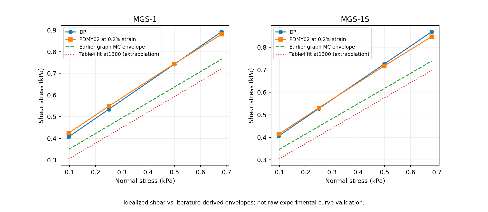
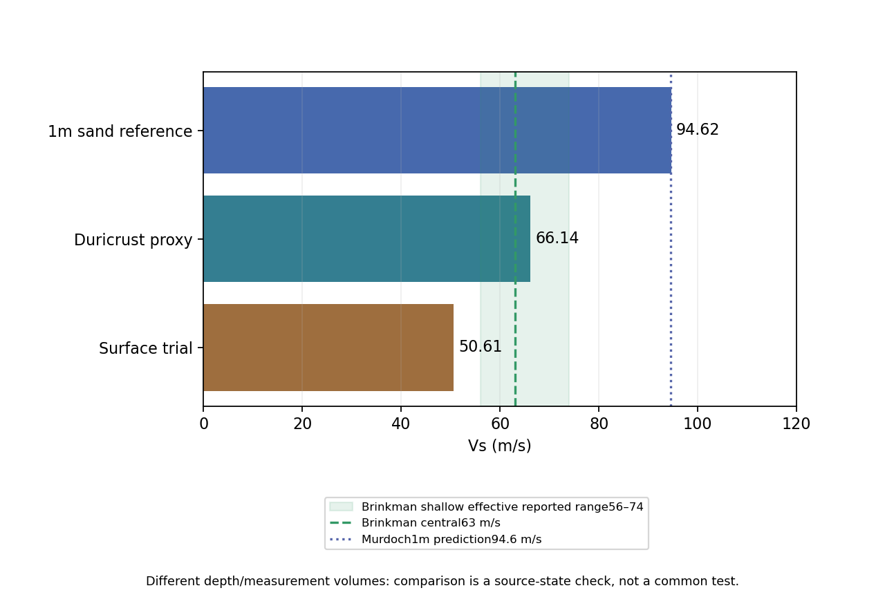

2026-11-24 · 기존 28개 시편 / 추가 문헌 압력 전단16개 · N–m–kg–s–Pa
이전 28/28 통과는 수치 구현 검사였습니다. 이번 평가는 입력 출처 일치, 구성식·평형 오차, 문헌 강도 포락선 차이를 분리했습니다. 독립된 화성 시편의 실험곡선을 재현·검증한 재료는 아직 없습니다. 실험 기준값이 없는 항목은 0%가 아니라 산정 불가로 표시했습니다.
28/28
기존 수치 검사 통과
16/16
추가 저압 전단 수치 검사
0
독립 화성 실험 검증 완료
기준 CSV · 수치 오차 전체 · 입력–문헌 대조 · 강도 비교 · 강도 오차 통계 · 파속 비교 · 거동 수치 · 후보별 판단 · 종합 JSON
수치 오차 기준은 프로젝트에서 정한 허용오차이며 논문에서 정한 합격기준이나 ASTM 재료 허용오차가 아닙니다. 문헌의 보고범위는 별도로 사용합니다. 강도 포락선의 ±5%는 이번 비교를 위한 잠정 목표이며 실험 불확도·현장 안전 기준이 아닙니다.
상대오차 = |해석값−기준값|/|기준값|×100. 부호 있는 차이는 (해석값/기준값−1)×100이며 +는 과대입니다. 기준값이0이면 상대오차를 정의하지 않고 Pa/N 단위 절대오차를 사용했습니다. 힘 평형은 이력 최대력으로 정규화해0 부근 분모 문제를 피했습니다.
| ID | 항목 | 계산식 | 허용 상대오차 % | 허용 절대오차 | 평가 범위 | 근거/한계 |
|---|---|---|---|---|---|---|
| N_E | initial E | abs(Efit/Ein-1) | 0.001 | 산정 불가/해당 없음 | numerical_formula | Existing project tolerance; not a paper validation standard |
| N_Y | DP triaxial yield | abs(qFE/qanalytic-1) | 0.01 | 산정 불가/해당 없음 | numerical_formula | Existing project tolerance; MC-matched triaxial compression only |
| N_SHEAR | DP fully developed simple-shear yield | tau=2sqrt(3)*cos(phi)/(3-sin(phi)) * (c+p*tan(phi)) | 0.01 | 산정 불가/해당 없음 | added_numerical_formula | Derived from the implemented DP yield surface at equal normal stresses and zero dilation; not a paper strength fit |
| N_M | cube mass | abs((spring_k/eigenvalue)/(rho*1m3)-1) | 1e-05 | 산정 불가/해당 없음 | numerical_formula | Existing project tolerance; density implementation, not a density experiment |
| N_L | lateral pressure | max(abs(sigma_x+p),abs(sigma_y+p))/p | 0.001 | 산정 불가/해당 없음 | numerical_boundary | Existing tolerance |
| N_F | force balance | max(abs(F+R))/max(max(abs(F)),1N); triaxial scale=max(qpeak*A,p*A,1N) | 0.001 | 산정 불가/해당 없음 | numerical_equilibrium | Existing tolerance |
| N_V | constant vertical pressure | max(abs(sigma_z+p))/p | 0.001 | 산정 불가/해당 없음 | numerical_boundary | Existing tolerance |
| N_U | DP elastic unloading to q0 | abs(qfinal)/qyield | 0.01 | 산정 불가/해당 없음 | numerical_formula | Existing tolerance; residual strain imposed at 2*qyield/E |
| N_C | elastic curve | abs(q-E*eps) <= .01Pa + 1e-6*abs(E*eps) | 0.0001 | 산정 불가/해당 없음 | numerical_formula | Existing mixed absolute/relative tolerance |
| N_0 | elastic return to origin | abs(qfinal) < .01Pa | 산정 불가/해당 없음 | 0.01 | numerical_formula | Existing absolute tolerance; relative error undefined at zero |
| N_CAP | spring capacity bound | max(abs(F))/Fult <= 1.001 | 0.1 | 산정 불가/해당 없음 | constitutive_bound | Existing upper bound; reaching Fult is not required at finite displacement |
| N_GAP | ElasticPPGap capacity | abs(Fmin/Fyield-1) | 0.0001 | 산정 불가/해당 없음 | synthetic_mechanics | Existing tolerance; not a measured contact force |
| N_HYS | Hysteretic initial stiffness | abs(KFE/Kinput-1) | 0.001 | 산정 불가/해당 없음 | synthetic_mechanics | Existing tolerance |
| L_RANGE | reported interval membership | reported_low <= trial_value <= reported_high | 산정 불가/해당 없음 | 산정 불가/해당 없음 | literature_plausibility | Published range; no assumed confidence level or layer-specific validation |
| L_ENV | approximate MC envelope difference | 100*(tau_FE/tau_reference-1) | 5 | 산정 불가/해당 없음 | provisional_literature_target | NEW project screening target, not a paper/ASTM tolerance or statistical acceptance criterion. Density/fixture mismatch remains. |
| L_CURVE | experimental cyclic/force-displacement curve RMSE | RMSE=sqrt(mean((prediction-observation)^2)) | 산정 불가/해당 없음 | 산정 불가/해당 없음 | not_evaluable | Matched raw experimental curves unavailable. Not calculated as zero. |
| L_50 | nominal spring half-capacity point | 100*(abs(F(z50))/(.5*Fult)-1) | 산정 불가/해당 없음 | 산정 불가/해당 없음 | nominal_diagnostic | Nominal shape diagnostic, not a universal pass tolerance. Simple1 docs do not establish exact Simple2 shape equivalence. |
50개 기존 하중 이력과22개 질량 검사 결과를 다시 계산했습니다. 아래의 극히 작은 값은 구성식/입력과의 일치이며 실제 토양의 예측 오차가 아닙니다. DP 삼축압축 이론값 qᵧ = [2σ₃sinφ + 2c cosφ]/[1−sinφ]를 사용했습니다.
| 항목 | 최대 오차 % | 해당 시편 | 조건 |
|---|---|---|---|
| E_initial | 4.78079e-12 | surface_elastic | p50000 |
| q_yield | 1.25104e-13 | sand_mgs1_dp_1300 | p50000 |
| mass | 1.43048e-10 | fractured_basalt_elastic | 1m3_rigid_translation |
| force_balance_max_error | 5.95457e-05 | blocky_ejecta_pdmy02_trial | p5000 |
| vertical_stress_max_error | 3.83519e-05 | blocky_ejecta_pdmy02_trial | p5000 |
| E_unloading | 1.57407e-13 | local_gravel_dp_trial | p5000 |
| DP_steady_simple_shear | 0.000104751 | sand_mgs1_dp_1300 | additional_p680 |
| 시편 | 조건 | 이론 q Pa | 해석 q Pa | 차이 Pa | 오차 % | 기준 충족 |
|---|---|---|---|---|---|---|
| surface_dp_trial | p5000 | 10000 | 10000 | 9.09495e-12 | 9.09495e-14 | 예 |
| surface_dp_trial | p50000 | 100000 | 100000 | 1.45519e-11 | 1.45519e-14 | 예 |
| duricrust_dp | p5000 | 30091.8 | 30091.8 | 7.27596e-12 | 2.41792e-14 | 예 |
| duricrust_dp | p50000 | 120092 | 120092 | 8.73115e-11 | 7.2704e-14 | 예 |
| sand_mgs1_dp_1300 | p5000 | 14936.7 | 14936.7 | 1.09139e-11 | 7.30677e-14 | 예 |
| sand_mgs1_dp_1300 | p50000 | 139582 | 139582 | 1.74623e-10 | 1.25104e-13 | 예 |
| sand_mgs1s_dp_1300 | p5000 | 13738.9 | 13738.9 | 5.45697e-12 | 3.97192e-14 | 예 |
| sand_mgs1s_dp_1300 | p50000 | 127910 | 127910 | 1.01863e-10 | 7.96369e-14 | 예 |
| local_gravel_dp_trial | p5000 | 13450.9 | 13450.9 | 1.27329e-11 | 9.46625e-14 | 예 |
| local_gravel_dp_trial | p50000 | 134509 | 134509 | 1.16415e-10 | 8.65486e-14 | 예 |
| blocky_ejecta_dp_trial | p5000 | 13450.9 | 13450.9 | 9.09495e-12 | 6.76161e-14 | 예 |
| blocky_ejecta_dp_trial | p50000 | 134509 | 134509 | 8.73115e-11 | 6.49114e-14 | 예 |
제하 시 잔류축변형 2qᵧ/E는 이번 변위 제어 이력에서 의도한 값입니다. 실제 실험의 잔류침하 검증이 아닙니다. PDMY02의 γ=0에서 남은 τ는 구속 상태의 잔류응력이며 자유 제하 잔류변형과 구분했습니다.
같은 저장 재료를 문헌 정상응력 97/250/500/680Pa에서 추가 단순전단했습니다. DP는 포락선 부근 평탄 응답을 얻었습니다. PDMY02는 γ0.2% 시점이며 일부는 여전히 경화하므로 극한강도로 부르지 않습니다. 정상응력 범위를 맞췄어도 논문10.17×10.17cm 직접전단 상자와 이번1m 균질요소의 경계조건·응력경로는 다릅니다.
① 기존 그림 기반 기준: τref = 280Pa + σₙtanφ, φ=35.5°/34°. 입력 선정에 사용한 근사값이므로 독립 검증 데이터는 아닙니다.
② Table4·식2 재확인: c=A₁exp(kρ), ρ는g/cm³. MGS-1: A₁4.96Pa,k2.97; MGS-1S: A₁5.28Pa,k2.93. ρ1.30에서 c235.664/238.156Pa입니다. 기존280Pa는 각각 +18.81/+17.57% 높습니다. 다만 원 논문 최소밀도1.32/1.31보다 낮아 이 값은 작은 외삽입니다. 최소 시험밀도에서의 적합식 c250.086/245.237Pa와의 비교도 CSV에 병기했습니다. φ는 인접 밀도의 값으로 유지했습니다.
A₁·k의 공분산과 원 시험점 잔차가 없으므로 이 적합식에서 엄밀한 신뢰구간을 만들지 않았습니다. 그림 근사값–적합식 차이를 시험 오차로 단정하지 않습니다.

| 시편 | 그림 포락선 MAPE % | 그림 포락선 RMSE Pa | NRMSE % | 표4 외삽 기준 MAPE % |
|---|---|---|---|---|
| sand_mgs1_dp_1300 | 16.5701 | 95.2817 | 17.2518 | 27.9037 |
| sand_mgs1_pdmy02_1300 | 18.2608 | 98.0919 | 17.7606 | 29.8382 |
| sand_mgs1s_dp_1300 | 17.6607 | 98.616 | 18.3474 | 28.6463 |
| sand_mgs1s_pdmy02_1300 | 17.3384 | 91.534 | 17.0298 | 28.3521 |
MAPE는 정상응력4개 지점의 평균 절대백분율 차이. NRMSE=RMSE/기준 전단강도 평균×100. 이 RMSE는 응력–변형률 원 시험곡선의 오차가 아닙니다. 모두 잠정 ±5% 목표를 넘으므로 현재 강도 일치를 주장하지 않습니다.
| 시편 | σn Pa | τ 해석 Pa | 그림 기준 Pa | 그림 대비 % | 표4 외삽 기준 Pa | 표4 대비 % | 마지막20점 변화 % |
|---|---|---|---|---|---|---|---|
| sand_mgs1_dp_1300 | 97 | 407.051 | 349.189 | 16.5702 | 304.853 | 33.5236 | 2.22571e-07 |
| sand_mgs1_dp_1300 | 250 | 534.268 | 458.323 | 16.5702 | 413.987 | 29.0544 | 1.48166e-06 |
| sand_mgs1_dp_1300 | 500 | 742.14 | 636.647 | 16.5702 | 592.31 | 25.2958 | 0.00014822 |
| sand_mgs1_dp_1300 | 680 | 891.807 | 765.039 | 16.5701 | 720.703 | 23.7412 | 0.00107786 |
| sand_mgs1s_dp_1300 | 97 | 406.432 | 345.427 | 17.6607 | 303.583 | 33.8783 | 2.26065e-07 |
| sand_mgs1s_dp_1300 | 250 | 527.858 | 448.627 | 17.6607 | 406.783 | 29.7639 | 1.33115e-06 |
| sand_mgs1s_dp_1300 | 500 | 726.266 | 617.254 | 17.6607 | 575.41 | 26.217 | 0.000113748 |
| sand_mgs1s_dp_1300 | 680 | 869.119 | 738.666 | 17.6606 | 696.822 | 24.7261 | 0.000827926 |
| sand_mgs1_pdmy02_1300 | 97 | 424.358 | 349.189 | 21.5267 | 304.853 | 39.2009 | 0.752326 |
| sand_mgs1_pdmy02_1300 | 250 | 548.343 | 458.323 | 19.6411 | 413.987 | 32.4542 | 2.11728 |
| sand_mgs1_pdmy02_1300 | 500 | 743.715 | 636.647 | 16.8175 | 592.31 | 25.5617 | 2.59284 |
| sand_mgs1_pdmy02_1300 | 680 | 880.237 | 765.039 | 15.0578 | 720.703 | 22.1359 | 2.42258 |
| sand_mgs1s_pdmy02_1300 | 97 | 414.155 | 345.427 | 19.8963 | 303.583 | 36.422 | 0.501857 |
| sand_mgs1s_pdmy02_1300 | 250 | 531.373 | 448.627 | 18.4443 | 406.783 | 30.6281 | 1.79254 |
| sand_mgs1s_pdmy02_1300 | 500 | 717.705 | 617.254 | 16.2738 | 575.41 | 24.7292 | 2.42502 |
| sand_mgs1s_pdmy02_1300 | 680 | 847.538 | 738.666 | 14.739 | 696.822 | 21.6291 | 2.26018 |
DP 차이의 원인: 현재의 삼축압축 일치 DP 매핑에서, 무팽창·충분한 단순전단 뒤 세 정상응력이−p로 같아지면 항복식으로부터 τDP = [2√3 cosφ/(3−sinφ)]·(c+p tanφ)가 됩니다. 이 계수는 MGS-1에서1.165702, MGS-1S에서1.176607입니다. 즉 근사 MC 포락선 대비 +16.57/+17.66%는 수치 오차가 아니라 이 매핑과 응력경로가 만드는 구조적인 강도 차이입니다. 실제 추가 해석은 이 DP 단순전단 이론과 최대 약0.000105% 차이로 맞았습니다. 기존 c의 근사값 차이는 별도의 항목입니다.
따라서 직접전단 포락선을 목표로 DP를 보정하면 기존 삼축압축 매칭도 다시 점검해야 합니다. PDMY02의 수축·팽창/반복 계수를 유지한 채 초기 강성과φ만 바꾼 초안도 이 시험의 문헌 포락선과 일치하지 않습니다. 이번에는 재료값을 자동 수정하지 않았습니다.
Vs=√(G/ρ), Vp=√[(K+4G/3)/ρ]. Brinkman 천부 유효 보고범위와 얇은 개별층의 대용값을 구분했습니다. 표면 대용값은 보고범위보다 느리고, 경화층 대용값은 보고범위 안입니다. 이것만으로 층별 실측과 일치한다고 판정할 수 없습니다. 모래의 1m 파속 일치는 원래 그 예측 파속으로 물성을 만들었기 때문에 반올림 일관성 검사입니다.

| 시편 | 항목 | 계산 m/s | 문헌 중심/참조 m/s | 차이 % | 보고 하한 | 보고 상한 | 범위 내 | 비교 조건 |
|---|---|---|---|---|---|---|---|---|
| surface_elastic | Vs | 50.611 | 63 | -19.665 | 56 | 74 | 아니오 | Effective shallow-volume plausibility; not isolated-layer measurements |
| surface_elastic | Vp | 84.4721 | 119 | -29.015 | 98 | 164 | 아니오 | Effective shallow-volume plausibility; not isolated-layer measurements |
| surface_dp_trial | Vs | 50.611 | 63 | -19.665 | 56 | 74 | 아니오 | Effective shallow-volume plausibility; not isolated-layer measurements |
| surface_dp_trial | Vp | 84.4721 | 119 | -29.015 | 98 | 164 | 아니오 | Effective shallow-volume plausibility; not isolated-layer measurements |
| duricrust_elastic | Vs | 66.1438 | 63 | 4.99013 | 56 | 74 | 예 | Effective shallow-volume plausibility; not isolated-layer measurements |
| duricrust_elastic | Vp | 119.659 | 119 | 0.55345 | 98 | 164 | 예 | Effective shallow-volume plausibility; not isolated-layer measurements |
| duricrust_dp | Vs | 66.1438 | 63 | 4.99013 | 56 | 74 | 예 | Effective shallow-volume plausibility; not isolated-layer measurements |
| duricrust_dp | Vp | 119.659 | 119 | 0.55345 | 98 | 164 | 예 | Effective shallow-volume plausibility; not isolated-layer measurements |
| sand_elastic_1300 | Vs | 94.6221 | 94.6 | 0.0233611 | 산정 불가/해당 없음 | 산정 불가/해당 없음 | 산정 불가/해당 없음 | Predicted1m source used for input; rounding consistency only |
| sand_elastic_1300 | Vp | 157.929 | 157.9 | 0.0181314 | 산정 불가/해당 없음 | 산정 불가/해당 없음 | 산정 불가/해당 없음 | Predicted1m source used for input; rounding consistency only |
| sand_mgs1_dp_1300 | Vs | 94.6221 | 94.6 | 0.0233611 | 산정 불가/해당 없음 | 산정 불가/해당 없음 | 산정 불가/해당 없음 | Predicted1m source used for input; rounding consistency only |
| sand_mgs1_dp_1300 | Vp | 157.929 | 157.9 | 0.0181314 | 산정 불가/해당 없음 | 산정 불가/해당 없음 | 산정 불가/해당 없음 | Predicted1m source used for input; rounding consistency only |
| sand_mgs1s_dp_1300 | Vs | 94.6221 | 94.6 | 0.0233611 | 산정 불가/해당 없음 | 산정 불가/해당 없음 | 산정 불가/해당 없음 | Predicted1m source used for input; rounding consistency only |
| sand_mgs1s_dp_1300 | Vp | 157.929 | 157.9 | 0.0181314 | 산정 불가/해당 없음 | 산정 불가/해당 없음 | 산정 불가/해당 없음 | Predicted1m source used for input; rounding consistency only |
| fractured_basalt_elastic | Vs | 1356.43 | 1700 | -20.21 | 산정 불가/해당 없음 | 산정 불가/해당 없음 | 산정 불가/해당 없음 | Different model reference: compare cross-source scenario, not a fit requirement |
| fractured_basalt_elastic | Vp | 2453.87 | 3000 | -18.2042 | 산정 불가/해당 없음 | 산정 불가/해당 없음 | 산정 불가/해당 없음 | Different model reference: compare cross-source scenario, not a fit requirement |
| sediment_elastic_prior | Vs | 417 | 417 | 0 | 산정 불가/해당 없음 | 산정 불가/해당 없음 | 산정 불가/해당 없음 | Same prior used to calculate inputs: algebraic identity |
| sediment_elastic_prior | Vp | 750 | 750 | 0 | 산정 불가/해당 없음 | 산정 불가/해당 없음 | 산정 불가/해당 없음 | Same prior used to calculate inputs: algebraic identity |
경화층 E11.48MPa·ν.28에서 계산한 G4.484MPa/K8.697MPa는 Brinkman 표의 독립 최빈값 G4.47/K7.79와 각각 약 +0.322/+11.643% 차이입니다. K는 보고범위6.24–9.39MPa 안입니다. 이 차이를 구성식 오차로 계산하지 않습니다. 밀도1025는950–1100 추정범위의 선택값입니다. 파쇄 현무암 E13GPa/ν.28/ρ2760은 다른 참조의 Vp3000/Vs1700과 동시 일치하지 않습니다.
| 시편 | 입력 | 값 SI | 동일 기준 참조 | 차이 % | 근거 구분 | 범위 내 | 출처 | 위치 | 주의 |
|---|---|---|---|---|---|---|---|---|---|
| surface_elastic | E_Pa | 7500000.0 | 7.5e+06 | 0 | effective_reference_transfer | 산정 불가/해당 없음 | Kenda2020 | Table1, PDF4 | |
| surface_elastic | nu | 0.22 | 0.22 | 0 | effective_reference_transfer | 산정 불가/해당 없음 | Kenda2020 | Table1, PDF4 | |
| surface_elastic | G_Pa | 3073770.4918032787 | 산정 불가/해당 없음 | 산정 불가/해당 없음 | derived | 산정 불가/해당 없음 | isotropic_elasticity | G=E/[2(1+nu)], K=E/[3(1-2nu)] | |
| surface_elastic | K_Pa | 4464285.714285714 | 산정 불가/해당 없음 | 산정 불가/해당 없음 | derived | 산정 불가/해당 없음 | isotropic_elasticity | G=E/[2(1+nu)], K=E/[3(1-2nu)] | |
| surface_elastic | density_kg_m3 | 1200.0 | 1200 | 0 | inferred_reference | 산정 불가/해당 없음 | Spohn2022 | Section6.7 | |
| surface_dp_trial | E_Pa | 7500000.0 | 7.5e+06 | 0 | effective_reference_transfer | 산정 불가/해당 없음 | Kenda2020 | Table1, PDF4 | |
| surface_dp_trial | nu | 0.22 | 0.22 | 0 | effective_reference_transfer | 산정 불가/해당 없음 | Kenda2020 | Table1, PDF4 | |
| surface_dp_trial | G_Pa | 3073770.4918032787 | 산정 불가/해당 없음 | 산정 불가/해당 없음 | derived | 산정 불가/해당 없음 | isotropic_elasticity | G=E/[2(1+nu)], K=E/[3(1-2nu)] | |
| surface_dp_trial | K_Pa | 4464285.714285714 | 산정 불가/해당 없음 | 산정 불가/해당 없음 | derived | 산정 불가/해당 없음 | isotropic_elasticity | G=E/[2(1+nu)], K=E/[3(1-2nu)] | |
| surface_dp_trial | density_kg_m3 | 1200.0 | 1200 | 0 | inferred_reference | 산정 불가/해당 없음 | Spohn2022 | Section6.7 | |
| surface_dp_trial | phi_deg | 30.0 | 산정 불가/해당 없음 | 산정 불가/해당 없음 | assumed | 산정 불가/해당 없음 | specimen_assumption | unbonded granular sensitivity | c=0 and phi are trial envelope choices; no layer-specific shear test |
| surface_dp_trial | c_Pa | 0.0 | 산정 불가/해당 없음 | 산정 불가/해당 없음 | assumed | 산정 불가/해당 없음 | specimen_assumption | unbonded granular sensitivity | c=0 and phi are trial envelope choices; no layer-specific shear test |
| surface_dp_trial | psi_deg | 0.0 | 산정 불가/해당 없음 | 산정 불가/해당 없음 | assumed | 산정 불가/해당 없음 | specimen_assumption | non-associated flow | Zero dilation; not measured |
| surface_dp_trial | hardening | 0.0 | 산정 불가/해당 없음 | 산정 불가/해당 없음 | assumed | 산정 불가/해당 없음 | specimen_assumption | perfect plasticity | No measured hardening/softening curve |
| duricrust_elastic | E_Pa | 11480000.0 | 1.148e+07 | 0 | effective_shallow_proxy | 예 | Brinkman2022 | Table4, PDF13 | Not isolated duricrust |
| duricrust_elastic | nu | 0.28 | 0.28 | 0 | effective_shallow_proxy | 예 | Brinkman2022 | Table4, PDF13 | |
| duricrust_elastic | G_Pa | 4484375.0 | 산정 불가/해당 없음 | 산정 불가/해당 없음 | derived | 산정 불가/해당 없음 | isotropic_elasticity | G=E/[2(1+nu)], K=E/[3(1-2nu)] | |
| duricrust_elastic | K_Pa | 8696969.696969697 | 산정 불가/해당 없음 | 산정 불가/해당 없음 | derived | 산정 불가/해당 없음 | isotropic_elasticity | G=E/[2(1+nu)], K=E/[3(1-2nu)] | |
| duricrust_elastic | density_kg_m3 | 1025.0 | 산정 불가/해당 없음 | 산정 불가/해당 없음 | inferred_range | 예 | Spohn2022 | Section6.7 | Midpoint chosen; no point measurement |
| duricrust_dp | E_Pa | 11480000.0 | 1.148e+07 | 0 | effective_shallow_proxy | 예 | Brinkman2022 | Table4, PDF13 | Not isolated duricrust |
| duricrust_dp | nu | 0.28 | 0.28 | 0 | effective_shallow_proxy | 예 | Brinkman2022 | Table4, PDF13 | |
| duricrust_dp | G_Pa | 4484375.0 | 산정 불가/해당 없음 | 산정 불가/해당 없음 | derived | 산정 불가/해당 없음 | isotropic_elasticity | G=E/[2(1+nu)], K=E/[3(1-2nu)] | |
| duricrust_dp | K_Pa | 8696969.696969697 | 산정 불가/해당 없음 | 산정 불가/해당 없음 | derived | 산정 불가/해당 없음 | isotropic_elasticity | G=E/[2(1+nu)], K=E/[3(1-2nu)] | |
| duricrust_dp | density_kg_m3 | 1025.0 | 산정 불가/해당 없음 | 산정 불가/해당 없음 | inferred_range | 예 | Spohn2022 | Section6.7 | Midpoint chosen; no point measurement |
| duricrust_dp | phi_deg | 30.0 | 30 | 0 | source_assumption_not_measurement | 산정 불가/해당 없음 | Spohn2022 | Section6.4 | |
| duricrust_dp | c_Pa | 5800.0 | 5800 | 0 | conditional_inference | 예 | Spohn2022 | Section6.4 | Conditional on phi30 and rho1200; applied rho1025 |
| duricrust_dp | psi_deg | 0.0 | 산정 불가/해당 없음 | 산정 불가/해당 없음 | assumed | 산정 불가/해당 없음 | specimen_assumption | non-associated flow | Zero dilation; not measured |
| duricrust_dp | hardening | 0.0 | 산정 불가/해당 없음 | 산정 불가/해당 없음 | assumed | 산정 불가/해당 없음 | specimen_assumption | perfect plasticity | No measured hardening/softening curve |
| sand_elastic_1300 | E_Pa | 28400000.0 | 2.83878e+07 | 0.0429825 | derived_at_target_density | 산정 불가/해당 없음 | Murdoch2018 | Table2, PDF15–16 | Predicted 1m state, not measured static modulus |
| sand_elastic_1300 | nu | 0.22 | 0.220046 | -0.0207561 | derived_at_target_density | 산정 불가/해당 없음 | Murdoch2018 | Table2, PDF15–16 | Predicted 1m state, not measured static modulus |
| sand_elastic_1300 | G_Pa | 11639344.262295082 | 1.16339e+07 | 0.0467277 | derived_at_target_density | 산정 불가/해당 없음 | Murdoch2018 | Table2, PDF15–16 | Predicted 1m state, not measured static modulus |
| sand_elastic_1300 | K_Pa | 16904761.904761903 | 1.69003e+07 | 0.0266637 | derived_at_target_density | 산정 불가/해당 없음 | Murdoch2018 | Table2, PDF15–16 | Predicted 1m state, not measured static modulus |
| sand_elastic_1300 | density_kg_m3 | 1300.0 | 산정 불가/해당 없음 | 산정 불가/해당 없음 | inferred_range | 예 | Spohn2022 | Section6.7 | |
| sand_mgs1_dp_1300 | E_Pa | 28400000.0 | 2.83878e+07 | 0.0429825 | derived_at_target_density | 산정 불가/해당 없음 | Murdoch2018 | Table2, PDF15–16 | Predicted 1m state, not measured static modulus |
| sand_mgs1_dp_1300 | nu | 0.22 | 0.220046 | -0.0207561 | derived_at_target_density | 산정 불가/해당 없음 | Murdoch2018 | Table2, PDF15–16 | Predicted 1m state, not measured static modulus |
| sand_mgs1_dp_1300 | G_Pa | 11639344.262295082 | 1.16339e+07 | 0.0467277 | derived_at_target_density | 산정 불가/해당 없음 | Murdoch2018 | Table2, PDF15–16 | Predicted 1m state, not measured static modulus |
| sand_mgs1_dp_1300 | K_Pa | 16904761.904761903 | 1.69003e+07 | 0.0266637 | derived_at_target_density | 산정 불가/해당 없음 | Murdoch2018 | Table2, PDF15–16 | Predicted 1m state, not measured static modulus |
| sand_mgs1_dp_1300 | density_kg_m3 | 1300 | 산정 불가/해당 없음 | 산정 불가/해당 없음 | inferred_range | 예 | Spohn2022 | Section6.7 | |
| sand_mgs1_dp_1300 | phi_deg | 35.5 | 35.5 | 0 | approximate_graph_transfer | 산정 불가/해당 없음 | Dotson2024 | Figure6 | |
| sand_mgs1_dp_1300 | c_Pa | 280 | 280 | 0 | approximate_graph_transfer | 산정 불가/해당 없음 | Dotson2024 | Figure5, earlier graph reading | Approximate graph reading; Table4 fit checked separately below |
| sand_mgs1_dp_1300 | psi_deg | 0.0 | 산정 불가/해당 없음 | 산정 불가/해당 없음 | assumed | 산정 불가/해당 없음 | specimen_assumption | non-associated flow | Zero dilation; not measured |
| sand_mgs1_dp_1300 | hardening | 0.0 | 산정 불가/해당 없음 | 산정 불가/해당 없음 | assumed | 산정 불가/해당 없음 | specimen_assumption | perfect plasticity | No measured hardening/softening curve |
| sand_mgs1s_dp_1300 | E_Pa | 28400000.0 | 2.83878e+07 | 0.0429825 | derived_at_target_density | 산정 불가/해당 없음 | Murdoch2018 | Table2, PDF15–16 | Predicted 1m state, not measured static modulus |
| sand_mgs1s_dp_1300 | nu | 0.22 | 0.220046 | -0.0207561 | derived_at_target_density | 산정 불가/해당 없음 | Murdoch2018 | Table2, PDF15–16 | Predicted 1m state, not measured static modulus |
| sand_mgs1s_dp_1300 | G_Pa | 11639344.262295082 | 1.16339e+07 | 0.0467277 | derived_at_target_density | 산정 불가/해당 없음 | Murdoch2018 | Table2, PDF15–16 | Predicted 1m state, not measured static modulus |
| sand_mgs1s_dp_1300 | K_Pa | 16904761.904761903 | 1.69003e+07 | 0.0266637 | derived_at_target_density | 산정 불가/해당 없음 | Murdoch2018 | Table2, PDF15–16 | Predicted 1m state, not measured static modulus |
| sand_mgs1s_dp_1300 | density_kg_m3 | 1300 | 산정 불가/해당 없음 | 산정 불가/해당 없음 | inferred_range | 예 | Spohn2022 | Section6.7 | |
| sand_mgs1s_dp_1300 | phi_deg | 34.0 | 34 | 0 | approximate_graph_transfer | 산정 불가/해당 없음 | Dotson2024 | Figure6 | |
| sand_mgs1s_dp_1300 | c_Pa | 280 | 280 | 0 | approximate_graph_transfer | 산정 불가/해당 없음 | Dotson2024 | Figure5, earlier graph reading | Approximate graph reading; Table4 fit checked separately below |
| sand_mgs1s_dp_1300 | psi_deg | 0.0 | 산정 불가/해당 없음 | 산정 불가/해당 없음 | assumed | 산정 불가/해당 없음 | specimen_assumption | non-associated flow | Zero dilation; not measured |
| sand_mgs1s_dp_1300 | hardening | 0.0 | 산정 불가/해당 없음 | 산정 불가/해당 없음 | assumed | 산정 불가/해당 없음 | specimen_assumption | perfect plasticity | No measured hardening/softening curve |
| local_gravel_elastic_proxy | E_Pa | 28400000.0 | 산정 불가/해당 없음 | 산정 불가/해당 없음 | proxy_assumption | 산정 불가/해당 없음 | Murdoch2018 | sand reference reused as matrix proxy | No gravel-layer E measured; penetration resistance 4.9 MPa is NOT E |
| local_gravel_elastic_proxy | nu | 0.22 | 산정 불가/해당 없음 | 산정 불가/해당 없음 | proxy_assumption | 산정 불가/해당 없음 | Murdoch2018 | sand reference reused as matrix proxy | No gravel-layer E measured; penetration resistance 4.9 MPa is NOT E |
| local_gravel_elastic_proxy | G_Pa | 11639344.262295082 | 산정 불가/해당 없음 | 산정 불가/해당 없음 | derived | 산정 불가/해당 없음 | isotropic_elasticity | G=E/[2(1+nu)], K=E/[3(1-2nu)] | |
| local_gravel_elastic_proxy | K_Pa | 16904761.904761903 | 산정 불가/해당 없음 | 산정 불가/해당 없음 | derived | 산정 불가/해당 없음 | isotropic_elasticity | G=E/[2(1+nu)], K=E/[3(1-2nu)] | |
| local_gravel_elastic_proxy | density_kg_m3 | 1600.0 | 1600 | 0 | mixture_estimate | 산정 불가/해당 없음 | Spohn2022 | Section6.7 | |
| local_gravel_dp_trial | E_Pa | 28400000.0 | 산정 불가/해당 없음 | 산정 불가/해당 없음 | proxy_assumption | 산정 불가/해당 없음 | Murdoch2018 | sand reference reused as matrix proxy | No gravel-layer E measured; penetration resistance 4.9 MPa is NOT E |
| local_gravel_dp_trial | nu | 0.22 | 산정 불가/해당 없음 | 산정 불가/해당 없음 | proxy_assumption | 산정 불가/해당 없음 | Murdoch2018 | sand reference reused as matrix proxy | No gravel-layer E measured; penetration resistance 4.9 MPa is NOT E |
| local_gravel_dp_trial | G_Pa | 11639344.262295082 | 산정 불가/해당 없음 | 산정 불가/해당 없음 | derived | 산정 불가/해당 없음 | isotropic_elasticity | G=E/[2(1+nu)], K=E/[3(1-2nu)] | |
| local_gravel_dp_trial | K_Pa | 16904761.904761903 | 산정 불가/해당 없음 | 산정 불가/해당 없음 | derived | 산정 불가/해당 없음 | isotropic_elasticity | G=E/[2(1+nu)], K=E/[3(1-2nu)] | |
| local_gravel_dp_trial | density_kg_m3 | 1600.0 | 1600 | 0 | mixture_estimate | 산정 불가/해당 없음 | Spohn2022 | Section6.7 | |
| local_gravel_dp_trial | phi_deg | 35.0 | 산정 불가/해당 없음 | 산정 불가/해당 없음 | assumed | 산정 불가/해당 없음 | specimen_assumption | unbonded granular sensitivity | c=0 and phi are trial envelope choices; no layer-specific shear test |
| local_gravel_dp_trial | c_Pa | 0.0 | 산정 불가/해당 없음 | 산정 불가/해당 없음 | assumed | 산정 불가/해당 없음 | specimen_assumption | unbonded granular sensitivity | c=0 and phi are trial envelope choices; no layer-specific shear test |
| local_gravel_dp_trial | psi_deg | 0.0 | 산정 불가/해당 없음 | 산정 불가/해당 없음 | assumed | 산정 불가/해당 없음 | specimen_assumption | non-associated flow | Zero dilation; not measured |
| local_gravel_dp_trial | hardening | 0.0 | 산정 불가/해당 없음 | 산정 불가/해당 없음 | assumed | 산정 불가/해당 없음 | specimen_assumption | perfect plasticity | No measured hardening/softening curve |
| blocky_ejecta_elastic | E_Pa | 520000000.0 | 5.2e+08 | 0 | expected_effective_reference | 산정 불가/해당 없음 | Kenda2020 | Table1, PDF4 | |
| blocky_ejecta_elastic | nu | 0.24 | 0.24 | 0 | expected_effective_reference | 산정 불가/해당 없음 | Kenda2020 | Table1, PDF4 | |
| blocky_ejecta_elastic | G_Pa | 209677419.3548387 | 산정 불가/해당 없음 | 산정 불가/해당 없음 | derived | 산정 불가/해당 없음 | isotropic_elasticity | G=E/[2(1+nu)], K=E/[3(1-2nu)] | |
| blocky_ejecta_elastic | K_Pa | 333333333.3333333 | 산정 불가/해당 없음 | 산정 불가/해당 없음 | derived | 산정 불가/해당 없음 | isotropic_elasticity | G=E/[2(1+nu)], K=E/[3(1-2nu)] | |
| blocky_ejecta_elastic | density_kg_m3 | 1700.0 | 산정 불가/해당 없음 | 산정 불가/해당 없음 | transferred_model_density | 산정 불가/해당 없음 | existing_project_reference | mars_insight_blocky_ejecta | 1700 carried over from published reference density scenario, not core measurement |
| blocky_ejecta_dp_trial | E_Pa | 520000000.0 | 5.2e+08 | 0 | expected_effective_reference | 산정 불가/해당 없음 | Kenda2020 | Table1, PDF4 | |
| blocky_ejecta_dp_trial | nu | 0.24 | 0.24 | 0 | expected_effective_reference | 산정 불가/해당 없음 | Kenda2020 | Table1, PDF4 | |
| blocky_ejecta_dp_trial | G_Pa | 209677419.3548387 | 산정 불가/해당 없음 | 산정 불가/해당 없음 | derived | 산정 불가/해당 없음 | isotropic_elasticity | G=E/[2(1+nu)], K=E/[3(1-2nu)] | |
| blocky_ejecta_dp_trial | K_Pa | 333333333.3333333 | 산정 불가/해당 없음 | 산정 불가/해당 없음 | derived | 산정 불가/해당 없음 | isotropic_elasticity | G=E/[2(1+nu)], K=E/[3(1-2nu)] | |
| blocky_ejecta_dp_trial | density_kg_m3 | 1700.0 | 산정 불가/해당 없음 | 산정 불가/해당 없음 | transferred_model_density | 산정 불가/해당 없음 | existing_project_reference | mars_insight_blocky_ejecta | 1700 carried over from published reference density scenario, not core measurement |
| blocky_ejecta_dp_trial | phi_deg | 35.0 | 산정 불가/해당 없음 | 산정 불가/해당 없음 | assumed | 산정 불가/해당 없음 | specimen_assumption | unbonded granular sensitivity | c=0 and phi are trial envelope choices; no layer-specific shear test |
| blocky_ejecta_dp_trial | c_Pa | 0.0 | 산정 불가/해당 없음 | 산정 불가/해당 없음 | assumed | 산정 불가/해당 없음 | specimen_assumption | unbonded granular sensitivity | c=0 and phi are trial envelope choices; no layer-specific shear test |
| blocky_ejecta_dp_trial | psi_deg | 0.0 | 산정 불가/해당 없음 | 산정 불가/해당 없음 | assumed | 산정 불가/해당 없음 | specimen_assumption | non-associated flow | Zero dilation; not measured |
| blocky_ejecta_dp_trial | hardening | 0.0 | 산정 불가/해당 없음 | 산정 불가/해당 없음 | assumed | 산정 불가/해당 없음 | specimen_assumption | perfect plasticity | No measured hardening/softening curve |
| fractured_basalt_elastic | E_Pa | 13000000000.0 | 1.3e+10 | 0 | expected_effective_reference | 산정 불가/해당 없음 | Kenda2020 | Table1, PDF4 | |
| fractured_basalt_elastic | nu | 0.28 | 0.28 | 0 | expected_effective_reference | 산정 불가/해당 없음 | Kenda2020 | Table1, PDF4 | |
| fractured_basalt_elastic | G_Pa | 5078125000.0 | 산정 불가/해당 없음 | 산정 불가/해당 없음 | derived | 산정 불가/해당 없음 | isotropic_elasticity | G=E/[2(1+nu)], K=E/[3(1-2nu)] | |
| fractured_basalt_elastic | K_Pa | 9848484848.48485 | 산정 불가/해당 없음 | 산정 불가/해당 없음 | derived | 산정 불가/해당 없음 | isotropic_elasticity | G=E/[2(1+nu)], K=E/[3(1-2nu)] | |
| fractured_basalt_elastic | density_kg_m3 | 2760.0 | 2760 | 0 | terrestrial_analogue | 산정 불가/해당 없음 | Morgan2018 | PDF39 | |
| sediment_elastic_prior | E_Pa | 754558814.2569305 | 산정 불가/해당 없음 | 산정 불가/해당 없음 | derived_from_prior | 산정 불가/해당 없음 | Hobiger2021 | Table 2 modified prior, sediment Vp750 Vs417 m/s | Prior values, not final inversion point or actual 30–75m measured stiffness; density assumed |
| sediment_elastic_prior | nu | 0.276268556474212 | 산정 불가/해당 없음 | 산정 불가/해당 없음 | derived_from_prior | 산정 불가/해당 없음 | Hobiger2021 | Table 2 modified prior, sediment Vp750 Vs417 m/s | Prior values, not final inversion point or actual 30–75m measured stiffness; density assumed |
| sediment_elastic_prior | G_Pa | 295611300.0 | 산정 불가/해당 없음 | 산정 불가/해당 없음 | derived | 산정 불가/해당 없음 | isotropic_elasticity | G=E/[2(1+nu)], K=E/[3(1-2nu)] | |
| sediment_elastic_prior | K_Pa | 562101600.0 | 산정 불가/해당 없음 | 산정 불가/해당 없음 | derived | 산정 불가/해당 없음 | isotropic_elasticity | G=E/[2(1+nu)], K=E/[3(1-2nu)] | |
| sediment_elastic_prior | density_kg_m3 | 1700.0 | 산정 불가/해당 없음 | 산정 불가/해당 없음 | assumed | 산정 불가/해당 없음 | specimen_assumption | velocity-to-modulus conversion | 1700 kg/m3 requires density sensitivity |
| sediment_elastic_prior | Vp_m_s | 750.0 | 750 | 0 | prior_not_inversion | 산정 불가/해당 없음 | Hobiger2021 | Table2, PDF7 | |
| sediment_elastic_prior | Vs_m_s | 417.0 | 417 | 0 | prior_not_inversion | 산정 불가/해당 없음 | Hobiger2021 | Table2, PDF7 | |
| pdmy02_earth_dr30_reference | density_kg_m3 | 1700 | 1700 | 0 | earth_reference | 산정 불가/해당 없음 | PDMY02 | Suggested parameters table / defaults | No Mars cyclic calibration |
| pdmy02_earth_dr30_reference | G_Pa | 67416615.16273269 | 6.74166e+07 | 0 | converted_earth_reference | 산정 불가/해당 없음 | PDMY02 | Suggested parameters table / defaults | No Mars cyclic calibration |
| pdmy02_earth_dr30_reference | K_Pa | 179777640.43395385 | 1.79778e+08 | 0 | converted_earth_reference | 산정 불가/해당 없음 | PDMY02 | Suggested parameters table / defaults | No Mars cyclic calibration |
| pdmy02_earth_dr30_reference | phi_deg | 31 | 31 | 0 | earth_reference | 산정 불가/해당 없음 | PDMY02 | Suggested parameters table / defaults | No Mars cyclic calibration |
| pdmy02_earth_dr30_reference | peak_shear_strain | 0.1 | 0.1 | 0 | earth_reference | 산정 불가/해당 없음 | PDMY02 | Suggested parameters table / defaults | No Mars cyclic calibration |
| pdmy02_earth_dr30_reference | p_ref_Pa | 101000.0 | 101000 | 0 | earth_reference | 산정 불가/해당 없음 | PDMY02 | Suggested parameters table / defaults | No Mars cyclic calibration |
| pdmy02_earth_dr30_reference | pressure_exponent | 0.5 | 0.5 | 0 | earth_reference | 산정 불가/해당 없음 | PDMY02 | Suggested parameters table / defaults | No Mars cyclic calibration |
| pdmy02_earth_dr30_reference | PTAngle_deg | 31 | 31 | 0 | earth_reference | 산정 불가/해당 없음 | PDMY02 | Suggested parameters table / defaults | No Mars cyclic calibration |
| pdmy02_earth_dr30_reference | contrac1 | 0.087 | 0.087 | 0 | earth_reference | 산정 불가/해당 없음 | PDMY02 | Suggested parameters table / defaults | No Mars cyclic calibration |
| pdmy02_earth_dr30_reference | contrac3 | 0.18 | 0.18 | 0 | earth_reference | 산정 불가/해당 없음 | PDMY02 | Suggested parameters table / defaults | No Mars cyclic calibration |
| pdmy02_earth_dr30_reference | dilat1 | 0 | 0 | 산정 불가/해당 없음 | earth_reference | 산정 불가/해당 없음 | PDMY02 | Suggested parameters table / defaults | No Mars cyclic calibration |
| pdmy02_earth_dr30_reference | dilat3 | 0 | 0 | 산정 불가/해당 없음 | earth_reference | 산정 불가/해당 없음 | PDMY02 | Suggested parameters table / defaults | No Mars cyclic calibration |
| pdmy02_earth_dr30_reference | n_surfaces | 20 | 20 | 0 | earth_reference | 산정 불가/해당 없음 | PDMY02 | Suggested parameters table / defaults | No Mars cyclic calibration |
| pdmy02_earth_dr30_reference | contrac2 | 5.0 | 5 | 0 | earth_reference | 산정 불가/해당 없음 | PDMY02 | Suggested parameters table / defaults | No Mars cyclic calibration |
| pdmy02_earth_dr30_reference | dilat2 | 3.0 | 3 | 0 | earth_reference | 산정 불가/해당 없음 | PDMY02 | Suggested parameters table / defaults | No Mars cyclic calibration |
| pdmy02_earth_dr30_reference | liquefac1 | 1.0 | 1 | 0 | earth_reference | 산정 불가/해당 없음 | PDMY02 | Suggested parameters table / defaults | No Mars cyclic calibration |
| pdmy02_earth_dr30_reference | liquefac2 | 0.0 | 0 | 산정 불가/해당 없음 | earth_reference | 산정 불가/해당 없음 | PDMY02 | Suggested parameters table / defaults | No Mars cyclic calibration |
| pdmy02_earth_dr30_reference | e | 0.85 | 0.85 | 0 | earth_reference | 산정 불가/해당 없음 | PDMY02 | Suggested parameters table / defaults | No Mars cyclic calibration |
| pdmy02_earth_dr30_reference | cs1 | 0.9 | 0.9 | 0 | earth_reference | 산정 불가/해당 없음 | PDMY02 | Suggested parameters table / defaults | No Mars cyclic calibration |
| pdmy02_earth_dr30_reference | cs2 | 0.02 | 0.02 | 0 | earth_reference | 산정 불가/해당 없음 | PDMY02 | Suggested parameters table / defaults | No Mars cyclic calibration |
| pdmy02_earth_dr30_reference | cs3 | 0.7 | 0.7 | 0 | earth_reference | 산정 불가/해당 없음 | PDMY02 | Suggested parameters table / defaults | No Mars cyclic calibration |
| pdmy02_earth_dr30_reference | pa_Pa | 101000.0 | 101000 | 0 | earth_reference | 산정 불가/해당 없음 | PDMY02 | Suggested parameters table / defaults | No Mars cyclic calibration |
| pdmy02_earth_dr30_reference | numerical_c_Pa | 300.0 | 300 | 0 | earth_reference | 산정 불가/해당 없음 | PDMY02 | Suggested parameters table / defaults | No Mars cyclic calibration |
| pdmy02_earth_dr40_reference | density_kg_m3 | 1800 | 1800 | 0 | earth_reference | 산정 불가/해당 없음 | PDMY02 | Suggested parameters table / defaults | No Mars cyclic calibration |
| pdmy02_earth_dr40_reference | G_Pa | 101124922.74409905 | 1.01125e+08 | 0 | converted_earth_reference | 산정 불가/해당 없음 | PDMY02 | Suggested parameters table / defaults | No Mars cyclic calibration |
| pdmy02_earth_dr40_reference | K_Pa | 247194255.59668654 | 2.47194e+08 | 0 | converted_earth_reference | 산정 불가/해당 없음 | PDMY02 | Suggested parameters table / defaults | No Mars cyclic calibration |
| pdmy02_earth_dr40_reference | phi_deg | 32 | 32 | 0 | earth_reference | 산정 불가/해당 없음 | PDMY02 | Suggested parameters table / defaults | No Mars cyclic calibration |
| pdmy02_earth_dr40_reference | peak_shear_strain | 0.1 | 0.1 | 0 | earth_reference | 산정 불가/해당 없음 | PDMY02 | Suggested parameters table / defaults | No Mars cyclic calibration |
| pdmy02_earth_dr40_reference | p_ref_Pa | 101000.0 | 101000 | 0 | earth_reference | 산정 불가/해당 없음 | PDMY02 | Suggested parameters table / defaults | No Mars cyclic calibration |
| pdmy02_earth_dr40_reference | pressure_exponent | 0.5 | 0.5 | 0 | earth_reference | 산정 불가/해당 없음 | PDMY02 | Suggested parameters table / defaults | No Mars cyclic calibration |
| pdmy02_earth_dr40_reference | PTAngle_deg | 26 | 26 | 0 | earth_reference | 산정 불가/해당 없음 | PDMY02 | Suggested parameters table / defaults | No Mars cyclic calibration |
| pdmy02_earth_dr40_reference | contrac1 | 0.067 | 0.067 | 0 | earth_reference | 산정 불가/해당 없음 | PDMY02 | Suggested parameters table / defaults | No Mars cyclic calibration |
| pdmy02_earth_dr40_reference | contrac3 | 0.23 | 0.23 | 0 | earth_reference | 산정 불가/해당 없음 | PDMY02 | Suggested parameters table / defaults | No Mars cyclic calibration |
| pdmy02_earth_dr40_reference | dilat1 | 0.06 | 0.06 | 0 | earth_reference | 산정 불가/해당 없음 | PDMY02 | Suggested parameters table / defaults | No Mars cyclic calibration |
| pdmy02_earth_dr40_reference | dilat3 | 0.27 | 0.27 | 0 | earth_reference | 산정 불가/해당 없음 | PDMY02 | Suggested parameters table / defaults | No Mars cyclic calibration |
| pdmy02_earth_dr40_reference | n_surfaces | 20 | 20 | 0 | earth_reference | 산정 불가/해당 없음 | PDMY02 | Suggested parameters table / defaults | No Mars cyclic calibration |
| pdmy02_earth_dr40_reference | contrac2 | 5.0 | 5 | 0 | earth_reference | 산정 불가/해당 없음 | PDMY02 | Suggested parameters table / defaults | No Mars cyclic calibration |
| pdmy02_earth_dr40_reference | dilat2 | 3.0 | 3 | 0 | earth_reference | 산정 불가/해당 없음 | PDMY02 | Suggested parameters table / defaults | No Mars cyclic calibration |
| pdmy02_earth_dr40_reference | liquefac1 | 1.0 | 1 | 0 | earth_reference | 산정 불가/해당 없음 | PDMY02 | Suggested parameters table / defaults | No Mars cyclic calibration |
| pdmy02_earth_dr40_reference | liquefac2 | 0.0 | 0 | 산정 불가/해당 없음 | earth_reference | 산정 불가/해당 없음 | PDMY02 | Suggested parameters table / defaults | No Mars cyclic calibration |
| pdmy02_earth_dr40_reference | e | 0.77 | 0.77 | 0 | earth_reference | 산정 불가/해당 없음 | PDMY02 | Suggested parameters table / defaults | No Mars cyclic calibration |
| pdmy02_earth_dr40_reference | cs1 | 0.9 | 0.9 | 0 | earth_reference | 산정 불가/해당 없음 | PDMY02 | Suggested parameters table / defaults | No Mars cyclic calibration |
| pdmy02_earth_dr40_reference | cs2 | 0.02 | 0.02 | 0 | earth_reference | 산정 불가/해당 없음 | PDMY02 | Suggested parameters table / defaults | No Mars cyclic calibration |
| pdmy02_earth_dr40_reference | cs3 | 0.7 | 0.7 | 0 | earth_reference | 산정 불가/해당 없음 | PDMY02 | Suggested parameters table / defaults | No Mars cyclic calibration |
| pdmy02_earth_dr40_reference | pa_Pa | 101000.0 | 101000 | 0 | earth_reference | 산정 불가/해당 없음 | PDMY02 | Suggested parameters table / defaults | No Mars cyclic calibration |
| pdmy02_earth_dr40_reference | numerical_c_Pa | 300.0 | 300 | 0 | earth_reference | 산정 불가/해당 없음 | PDMY02 | Suggested parameters table / defaults | No Mars cyclic calibration |
| pdmy02_earth_dr50_reference | density_kg_m3 | 1900 | 1900 | 0 | earth_reference | 산정 불가/해당 없음 | PDMY02 | Suggested parameters table / defaults | No Mars cyclic calibration |
| pdmy02_earth_dr50_reference | G_Pa | 112361025.27122116 | 1.12361e+08 | 0 | converted_earth_reference | 산정 불가/해당 없음 | PDMY02 | Suggested parameters table / defaults | No Mars cyclic calibration |
| pdmy02_earth_dr50_reference | K_Pa | 261801188.8819453 | 2.61801e+08 | 0 | converted_earth_reference | 산정 불가/해당 없음 | PDMY02 | Suggested parameters table / defaults | No Mars cyclic calibration |
| pdmy02_earth_dr50_reference | phi_deg | 33.5 | 33.5 | 0 | earth_reference | 산정 불가/해당 없음 | PDMY02 | Suggested parameters table / defaults | No Mars cyclic calibration |
| pdmy02_earth_dr50_reference | peak_shear_strain | 0.1 | 0.1 | 0 | earth_reference | 산정 불가/해당 없음 | PDMY02 | Suggested parameters table / defaults | No Mars cyclic calibration |
| pdmy02_earth_dr50_reference | p_ref_Pa | 101000.0 | 101000 | 0 | earth_reference | 산정 불가/해당 없음 | PDMY02 | Suggested parameters table / defaults | No Mars cyclic calibration |
| pdmy02_earth_dr50_reference | pressure_exponent | 0.5 | 0.5 | 0 | earth_reference | 산정 불가/해당 없음 | PDMY02 | Suggested parameters table / defaults | No Mars cyclic calibration |
| pdmy02_earth_dr50_reference | PTAngle_deg | 25.5 | 25.5 | 0 | earth_reference | 산정 불가/해당 없음 | PDMY02 | Suggested parameters table / defaults | No Mars cyclic calibration |
| pdmy02_earth_dr50_reference | contrac1 | 0.045 | 0.045 | 0 | earth_reference | 산정 불가/해당 없음 | PDMY02 | Suggested parameters table / defaults | No Mars cyclic calibration |
| pdmy02_earth_dr50_reference | contrac3 | 0.15 | 0.15 | 0 | earth_reference | 산정 불가/해당 없음 | PDMY02 | Suggested parameters table / defaults | No Mars cyclic calibration |
| pdmy02_earth_dr50_reference | dilat1 | 0.06 | 0.06 | 0 | earth_reference | 산정 불가/해당 없음 | PDMY02 | Suggested parameters table / defaults | No Mars cyclic calibration |
| pdmy02_earth_dr50_reference | dilat3 | 0.15 | 0.15 | 0 | earth_reference | 산정 불가/해당 없음 | PDMY02 | Suggested parameters table / defaults | No Mars cyclic calibration |
| pdmy02_earth_dr50_reference | n_surfaces | 20 | 20 | 0 | earth_reference | 산정 불가/해당 없음 | PDMY02 | Suggested parameters table / defaults | No Mars cyclic calibration |
| pdmy02_earth_dr50_reference | contrac2 | 5.0 | 5 | 0 | earth_reference | 산정 불가/해당 없음 | PDMY02 | Suggested parameters table / defaults | No Mars cyclic calibration |
| pdmy02_earth_dr50_reference | dilat2 | 3.0 | 3 | 0 | earth_reference | 산정 불가/해당 없음 | PDMY02 | Suggested parameters table / defaults | No Mars cyclic calibration |
| pdmy02_earth_dr50_reference | liquefac1 | 1.0 | 1 | 0 | earth_reference | 산정 불가/해당 없음 | PDMY02 | Suggested parameters table / defaults | No Mars cyclic calibration |
| pdmy02_earth_dr50_reference | liquefac2 | 0.0 | 0 | 산정 불가/해당 없음 | earth_reference | 산정 불가/해당 없음 | PDMY02 | Suggested parameters table / defaults | No Mars cyclic calibration |
| pdmy02_earth_dr50_reference | e | 0.7 | 0.7 | 0 | earth_reference | 산정 불가/해당 없음 | PDMY02 | Suggested parameters table / defaults | No Mars cyclic calibration |
| pdmy02_earth_dr50_reference | cs1 | 0.9 | 0.9 | 0 | earth_reference | 산정 불가/해당 없음 | PDMY02 | Suggested parameters table / defaults | No Mars cyclic calibration |
| pdmy02_earth_dr50_reference | cs2 | 0.02 | 0.02 | 0 | earth_reference | 산정 불가/해당 없음 | PDMY02 | Suggested parameters table / defaults | No Mars cyclic calibration |
| pdmy02_earth_dr50_reference | cs3 | 0.7 | 0.7 | 0 | earth_reference | 산정 불가/해당 없음 | PDMY02 | Suggested parameters table / defaults | No Mars cyclic calibration |
| pdmy02_earth_dr50_reference | pa_Pa | 101000.0 | 101000 | 0 | earth_reference | 산정 불가/해당 없음 | PDMY02 | Suggested parameters table / defaults | No Mars cyclic calibration |
| pdmy02_earth_dr50_reference | numerical_c_Pa | 300.0 | 300 | 0 | earth_reference | 산정 불가/해당 없음 | PDMY02 | Suggested parameters table / defaults | No Mars cyclic calibration |
| pdmy02_earth_dr60_reference | density_kg_m3 | 2000 | 2000 | 0 | earth_reference | 산정 불가/해당 없음 | PDMY02 | Suggested parameters table / defaults | No Mars cyclic calibration |
| pdmy02_earth_dr60_reference | G_Pa | 123597127.79834327 | 1.23597e+08 | 0 | converted_earth_reference | 산정 불가/해당 없음 | PDMY02 | Suggested parameters table / defaults | No Mars cyclic calibration |
| pdmy02_earth_dr60_reference | K_Pa | 269666460.65093076 | 2.69666e+08 | 0 | converted_earth_reference | 산정 불가/해당 없음 | PDMY02 | Suggested parameters table / defaults | No Mars cyclic calibration |
| pdmy02_earth_dr60_reference | phi_deg | 35 | 35 | 0 | earth_reference | 산정 불가/해당 없음 | PDMY02 | Suggested parameters table / defaults | No Mars cyclic calibration |
| pdmy02_earth_dr60_reference | peak_shear_strain | 0.1 | 0.1 | 0 | earth_reference | 산정 불가/해당 없음 | PDMY02 | Suggested parameters table / defaults | No Mars cyclic calibration |
| pdmy02_earth_dr60_reference | p_ref_Pa | 101000.0 | 101000 | 0 | earth_reference | 산정 불가/해당 없음 | PDMY02 | Suggested parameters table / defaults | No Mars cyclic calibration |
| pdmy02_earth_dr60_reference | pressure_exponent | 0.5 | 0.5 | 0 | earth_reference | 산정 불가/해당 없음 | PDMY02 | Suggested parameters table / defaults | No Mars cyclic calibration |
| pdmy02_earth_dr60_reference | PTAngle_deg | 26 | 26 | 0 | earth_reference | 산정 불가/해당 없음 | PDMY02 | Suggested parameters table / defaults | No Mars cyclic calibration |
| pdmy02_earth_dr60_reference | contrac1 | 0.028 | 0.028 | 0 | earth_reference | 산정 불가/해당 없음 | PDMY02 | Suggested parameters table / defaults | No Mars cyclic calibration |
| pdmy02_earth_dr60_reference | contrac3 | 0.05 | 0.05 | 0 | earth_reference | 산정 불가/해당 없음 | PDMY02 | Suggested parameters table / defaults | No Mars cyclic calibration |
| pdmy02_earth_dr60_reference | dilat1 | 0.1 | 0.1 | 0 | earth_reference | 산정 불가/해당 없음 | PDMY02 | Suggested parameters table / defaults | No Mars cyclic calibration |
| pdmy02_earth_dr60_reference | dilat3 | 0.05 | 0.05 | 0 | earth_reference | 산정 불가/해당 없음 | PDMY02 | Suggested parameters table / defaults | No Mars cyclic calibration |
| pdmy02_earth_dr60_reference | n_surfaces | 20 | 20 | 0 | earth_reference | 산정 불가/해당 없음 | PDMY02 | Suggested parameters table / defaults | No Mars cyclic calibration |
| pdmy02_earth_dr60_reference | contrac2 | 5.0 | 5 | 0 | earth_reference | 산정 불가/해당 없음 | PDMY02 | Suggested parameters table / defaults | No Mars cyclic calibration |
| pdmy02_earth_dr60_reference | dilat2 | 3.0 | 3 | 0 | earth_reference | 산정 불가/해당 없음 | PDMY02 | Suggested parameters table / defaults | No Mars cyclic calibration |
| pdmy02_earth_dr60_reference | liquefac1 | 1.0 | 1 | 0 | earth_reference | 산정 불가/해당 없음 | PDMY02 | Suggested parameters table / defaults | No Mars cyclic calibration |
| pdmy02_earth_dr60_reference | liquefac2 | 0.0 | 0 | 산정 불가/해당 없음 | earth_reference | 산정 불가/해당 없음 | PDMY02 | Suggested parameters table / defaults | No Mars cyclic calibration |
| pdmy02_earth_dr60_reference | e | 0.65 | 0.65 | 0 | earth_reference | 산정 불가/해당 없음 | PDMY02 | Suggested parameters table / defaults | No Mars cyclic calibration |
| pdmy02_earth_dr60_reference | cs1 | 0.9 | 0.9 | 0 | earth_reference | 산정 불가/해당 없음 | PDMY02 | Suggested parameters table / defaults | No Mars cyclic calibration |
| pdmy02_earth_dr60_reference | cs2 | 0.02 | 0.02 | 0 | earth_reference | 산정 불가/해당 없음 | PDMY02 | Suggested parameters table / defaults | No Mars cyclic calibration |
| pdmy02_earth_dr60_reference | cs3 | 0.7 | 0.7 | 0 | earth_reference | 산정 불가/해당 없음 | PDMY02 | Suggested parameters table / defaults | No Mars cyclic calibration |
| pdmy02_earth_dr60_reference | pa_Pa | 101000.0 | 101000 | 0 | earth_reference | 산정 불가/해당 없음 | PDMY02 | Suggested parameters table / defaults | No Mars cyclic calibration |
| pdmy02_earth_dr60_reference | numerical_c_Pa | 300.0 | 300 | 0 | earth_reference | 산정 불가/해당 없음 | PDMY02 | Suggested parameters table / defaults | No Mars cyclic calibration |
| pdmy02_earth_dr75_reference | density_kg_m3 | 2100 | 2100 | 0 | earth_reference | 산정 불가/해당 없음 | PDMY02 | Suggested parameters table / defaults | No Mars cyclic calibration |
| pdmy02_earth_dr75_reference | G_Pa | 146069332.85258752 | 1.46069e+08 | 0 | converted_earth_reference | 산정 불가/해당 없음 | PDMY02 | Suggested parameters table / defaults | No Mars cyclic calibration |
| pdmy02_earth_dr75_reference | K_Pa | 292138665.70517504 | 2.92139e+08 | 0 | converted_earth_reference | 산정 불가/해당 없음 | PDMY02 | Suggested parameters table / defaults | No Mars cyclic calibration |
| pdmy02_earth_dr75_reference | phi_deg | 36.5 | 36.5 | 0 | earth_reference | 산정 불가/해당 없음 | PDMY02 | Suggested parameters table / defaults | No Mars cyclic calibration |
| pdmy02_earth_dr75_reference | peak_shear_strain | 0.1 | 0.1 | 0 | earth_reference | 산정 불가/해당 없음 | PDMY02 | Suggested parameters table / defaults | No Mars cyclic calibration |
| pdmy02_earth_dr75_reference | p_ref_Pa | 101000.0 | 101000 | 0 | earth_reference | 산정 불가/해당 없음 | PDMY02 | Suggested parameters table / defaults | No Mars cyclic calibration |
| pdmy02_earth_dr75_reference | pressure_exponent | 0.5 | 0.5 | 0 | earth_reference | 산정 불가/해당 없음 | PDMY02 | Suggested parameters table / defaults | No Mars cyclic calibration |
| pdmy02_earth_dr75_reference | PTAngle_deg | 26 | 26 | 0 | earth_reference | 산정 불가/해당 없음 | PDMY02 | Suggested parameters table / defaults | No Mars cyclic calibration |
| pdmy02_earth_dr75_reference | contrac1 | 0.013 | 0.013 | 0 | earth_reference | 산정 불가/해당 없음 | PDMY02 | Suggested parameters table / defaults | No Mars cyclic calibration |
| pdmy02_earth_dr75_reference | contrac3 | 0 | 0 | 산정 불가/해당 없음 | earth_reference | 산정 불가/해당 없음 | PDMY02 | Suggested parameters table / defaults | No Mars cyclic calibration |
| pdmy02_earth_dr75_reference | dilat1 | 0.3 | 0.3 | 0 | earth_reference | 산정 불가/해당 없음 | PDMY02 | Suggested parameters table / defaults | No Mars cyclic calibration |
| pdmy02_earth_dr75_reference | dilat3 | 0 | 0 | 산정 불가/해당 없음 | earth_reference | 산정 불가/해당 없음 | PDMY02 | Suggested parameters table / defaults | No Mars cyclic calibration |
| pdmy02_earth_dr75_reference | n_surfaces | 20 | 20 | 0 | earth_reference | 산정 불가/해당 없음 | PDMY02 | Suggested parameters table / defaults | No Mars cyclic calibration |
| pdmy02_earth_dr75_reference | contrac2 | 5.0 | 5 | 0 | earth_reference | 산정 불가/해당 없음 | PDMY02 | Suggested parameters table / defaults | No Mars cyclic calibration |
| pdmy02_earth_dr75_reference | dilat2 | 3.0 | 3 | 0 | earth_reference | 산정 불가/해당 없음 | PDMY02 | Suggested parameters table / defaults | No Mars cyclic calibration |
| pdmy02_earth_dr75_reference | liquefac1 | 1.0 | 1 | 0 | earth_reference | 산정 불가/해당 없음 | PDMY02 | Suggested parameters table / defaults | No Mars cyclic calibration |
| pdmy02_earth_dr75_reference | liquefac2 | 0.0 | 0 | 산정 불가/해당 없음 | earth_reference | 산정 불가/해당 없음 | PDMY02 | Suggested parameters table / defaults | No Mars cyclic calibration |
| pdmy02_earth_dr75_reference | e | 0.55 | 0.55 | 0 | earth_reference | 산정 불가/해당 없음 | PDMY02 | Suggested parameters table / defaults | No Mars cyclic calibration |
| pdmy02_earth_dr75_reference | cs1 | 0.9 | 0.9 | 0 | earth_reference | 산정 불가/해당 없음 | PDMY02 | Suggested parameters table / defaults | No Mars cyclic calibration |
| pdmy02_earth_dr75_reference | cs2 | 0.02 | 0.02 | 0 | earth_reference | 산정 불가/해당 없음 | PDMY02 | Suggested parameters table / defaults | No Mars cyclic calibration |
| pdmy02_earth_dr75_reference | cs3 | 0.7 | 0.7 | 0 | earth_reference | 산정 불가/해당 없음 | PDMY02 | Suggested parameters table / defaults | No Mars cyclic calibration |
| pdmy02_earth_dr75_reference | pa_Pa | 101000.0 | 101000 | 0 | earth_reference | 산정 불가/해당 없음 | PDMY02 | Suggested parameters table / defaults | No Mars cyclic calibration |
| pdmy02_earth_dr75_reference | numerical_c_Pa | 300.0 | 300 | 0 | earth_reference | 산정 불가/해당 없음 | PDMY02 | Suggested parameters table / defaults | No Mars cyclic calibration |
| sand_mgs1_pdmy02_1300 | density_kg_m3 | 1300 | 산정 불가/해당 없음 | 산정 불가/해당 없음 | selected_inferred_reference | 산정 불가/해당 없음 | Spohn2022 | Section 6.7, sand 1300–1500 kg/m3 | 1300 is also the previously saved target density |
| sand_mgs1_pdmy02_1300 | G_Pa | 11639344.262295082 | 산정 불가/해당 없음 | 산정 불가/해당 없음 | derived | 산정 불가/해당 없음 | isotropic_elasticity | G=E/[2(1+nu)], K=E/[3(1-2nu)] | |
| sand_mgs1_pdmy02_1300 | K_Pa | 16904761.904761903 | 산정 불가/해당 없음 | 산정 불가/해당 없음 | derived | 산정 불가/해당 없음 | isotropic_elasticity | G=E/[2(1+nu)], K=E/[3(1-2nu)] | |
| sand_mgs1_pdmy02_1300 | phi_deg | 35.5 | 산정 불가/해당 없음 | 산정 불가/해당 없음 | simulant_transfer_approximate | 산정 불가/해당 없음 | Dotson2024 | Figures 5–6; previously digitized set | c≈280 Pa, phi near rho1310–1320 transferred to rho1300. Direct-shear normal stress .097–.68 kPa, not foundation pressure validation |
| sand_mgs1_pdmy02_1300 | peak_shear_strain | 0.1 | 산정 불가/해당 없음 | 산정 불가/해당 없음 | proxy_assumption | 산정 불가/해당 없음 | PDMY02 | Dr50 defaults transferred to uncalibrated trial | Not identified by Mars observations. No claim of Mars Dr50 or matching physical c. |
| sand_mgs1_pdmy02_1300 | p_ref_Pa | 5000.0 | 산정 불가/해당 없음 | 산정 불가/해당 없음 | assumed | 산정 불가/해당 없음 | specimen_assumption | 5 kPa reference pressure | Anchor copied initial stiffness at 5 kPa; source did not identify this pressure dependence |
| sand_mgs1_pdmy02_1300 | pressure_exponent | 0.5 | 산정 불가/해당 없음 | 산정 불가/해당 없음 | proxy_assumption | 산정 불가/해당 없음 | PDMY02 | Dr50 defaults transferred to uncalibrated trial | Not identified by Mars observations. No claim of Mars Dr50 or matching physical c. |
| sand_mgs1_pdmy02_1300 | PTAngle_deg | 25.5 | 산정 불가/해당 없음 | 산정 불가/해당 없음 | proxy_assumption | 산정 불가/해당 없음 | PDMY02 | Dr50 defaults transferred to uncalibrated trial | Not identified by Mars observations. No claim of Mars Dr50 or matching physical c. |
| sand_mgs1_pdmy02_1300 | contrac1 | 0.045 | 산정 불가/해당 없음 | 산정 불가/해당 없음 | proxy_assumption | 산정 불가/해당 없음 | PDMY02 | Dr50 defaults transferred to uncalibrated trial | Not identified by Mars observations. No claim of Mars Dr50 or matching physical c. |
| sand_mgs1_pdmy02_1300 | contrac3 | 0.15 | 산정 불가/해당 없음 | 산정 불가/해당 없음 | proxy_assumption | 산정 불가/해당 없음 | PDMY02 | Dr50 defaults transferred to uncalibrated trial | Not identified by Mars observations. No claim of Mars Dr50 or matching physical c. |
| sand_mgs1_pdmy02_1300 | dilat1 | 0.06 | 산정 불가/해당 없음 | 산정 불가/해당 없음 | proxy_assumption | 산정 불가/해당 없음 | PDMY02 | Dr50 defaults transferred to uncalibrated trial | Not identified by Mars observations. No claim of Mars Dr50 or matching physical c. |
| sand_mgs1_pdmy02_1300 | dilat3 | 0.15 | 산정 불가/해당 없음 | 산정 불가/해당 없음 | proxy_assumption | 산정 불가/해당 없음 | PDMY02 | Dr50 defaults transferred to uncalibrated trial | Not identified by Mars observations. No claim of Mars Dr50 or matching physical c. |
| sand_mgs1_pdmy02_1300 | n_surfaces | 20 | 산정 불가/해당 없음 | 산정 불가/해당 없음 | proxy_assumption | 산정 불가/해당 없음 | PDMY02 | Dr50 defaults transferred to uncalibrated trial | Not identified by Mars observations. No claim of Mars Dr50 or matching physical c. |
| sand_mgs1_pdmy02_1300 | contrac2 | 5.0 | 산정 불가/해당 없음 | 산정 불가/해당 없음 | proxy_assumption | 산정 불가/해당 없음 | PDMY02 | Dr50 defaults transferred to uncalibrated trial | Not identified by Mars observations. No claim of Mars Dr50 or matching physical c. |
| sand_mgs1_pdmy02_1300 | dilat2 | 3.0 | 산정 불가/해당 없음 | 산정 불가/해당 없음 | proxy_assumption | 산정 불가/해당 없음 | PDMY02 | Dr50 defaults transferred to uncalibrated trial | Not identified by Mars observations. No claim of Mars Dr50 or matching physical c. |
| sand_mgs1_pdmy02_1300 | liquefac1 | 1.0 | 산정 불가/해당 없음 | 산정 불가/해당 없음 | proxy_assumption | 산정 불가/해당 없음 | PDMY02 | Dr50 defaults transferred to uncalibrated trial | Not identified by Mars observations. No claim of Mars Dr50 or matching physical c. |
| sand_mgs1_pdmy02_1300 | liquefac2 | 0.0 | 산정 불가/해당 없음 | 산정 불가/해당 없음 | proxy_assumption | 산정 불가/해당 없음 | PDMY02 | Dr50 defaults transferred to uncalibrated trial | Not identified by Mars observations. No claim of Mars Dr50 or matching physical c. |
| sand_mgs1_pdmy02_1300 | e | 0.7 | 산정 불가/해당 없음 | 산정 불가/해당 없음 | proxy_assumption | 산정 불가/해당 없음 | PDMY02 | Dr50 defaults transferred to uncalibrated trial | Not identified by Mars observations. No claim of Mars Dr50 or matching physical c. |
| sand_mgs1_pdmy02_1300 | cs1 | 0.9 | 산정 불가/해당 없음 | 산정 불가/해당 없음 | proxy_assumption | 산정 불가/해당 없음 | PDMY02 | Dr50 defaults transferred to uncalibrated trial | Not identified by Mars observations. No claim of Mars Dr50 or matching physical c. |
| sand_mgs1_pdmy02_1300 | cs2 | 0.02 | 산정 불가/해당 없음 | 산정 불가/해당 없음 | proxy_assumption | 산정 불가/해당 없음 | PDMY02 | Dr50 defaults transferred to uncalibrated trial | Not identified by Mars observations. No claim of Mars Dr50 or matching physical c. |
| sand_mgs1_pdmy02_1300 | cs3 | 0.7 | 산정 불가/해당 없음 | 산정 불가/해당 없음 | proxy_assumption | 산정 불가/해당 없음 | PDMY02 | Dr50 defaults transferred to uncalibrated trial | Not identified by Mars observations. No claim of Mars Dr50 or matching physical c. |
| sand_mgs1_pdmy02_1300 | pa_Pa | 101000.0 | 산정 불가/해당 없음 | 산정 불가/해당 없음 | proxy_assumption | 산정 불가/해당 없음 | PDMY02 | Dr50 defaults transferred to uncalibrated trial | Not identified by Mars observations. No claim of Mars Dr50 or matching physical c. |
| sand_mgs1_pdmy02_1300 | numerical_c_Pa | 300.0 | 산정 불가/해당 없음 | 산정 불가/해당 없음 | proxy_assumption | 산정 불가/해당 없음 | PDMY02 | Dr50 defaults transferred to uncalibrated trial | Not identified by Mars observations. No claim of Mars Dr50 or matching physical c. |
| sand_mgs1s_pdmy02_1300 | density_kg_m3 | 1300 | 산정 불가/해당 없음 | 산정 불가/해당 없음 | selected_inferred_reference | 산정 불가/해당 없음 | Spohn2022 | Section 6.7, sand 1300–1500 kg/m3 | 1300 is also the previously saved target density |
| sand_mgs1s_pdmy02_1300 | G_Pa | 11639344.262295082 | 산정 불가/해당 없음 | 산정 불가/해당 없음 | derived | 산정 불가/해당 없음 | isotropic_elasticity | G=E/[2(1+nu)], K=E/[3(1-2nu)] | |
| sand_mgs1s_pdmy02_1300 | K_Pa | 16904761.904761903 | 산정 불가/해당 없음 | 산정 불가/해당 없음 | derived | 산정 불가/해당 없음 | isotropic_elasticity | G=E/[2(1+nu)], K=E/[3(1-2nu)] | |
| sand_mgs1s_pdmy02_1300 | phi_deg | 34.0 | 산정 불가/해당 없음 | 산정 불가/해당 없음 | simulant_transfer_approximate | 산정 불가/해당 없음 | Dotson2024 | Figures 5–6; previously digitized set | c≈280 Pa, phi near rho1310–1320 transferred to rho1300. Direct-shear normal stress .097–.68 kPa, not foundation pressure validation |
| sand_mgs1s_pdmy02_1300 | peak_shear_strain | 0.1 | 산정 불가/해당 없음 | 산정 불가/해당 없음 | proxy_assumption | 산정 불가/해당 없음 | PDMY02 | Dr50 defaults transferred to uncalibrated trial | Not identified by Mars observations. No claim of Mars Dr50 or matching physical c. |
| sand_mgs1s_pdmy02_1300 | p_ref_Pa | 5000.0 | 산정 불가/해당 없음 | 산정 불가/해당 없음 | assumed | 산정 불가/해당 없음 | specimen_assumption | 5 kPa reference pressure | Anchor copied initial stiffness at 5 kPa; source did not identify this pressure dependence |
| sand_mgs1s_pdmy02_1300 | pressure_exponent | 0.5 | 산정 불가/해당 없음 | 산정 불가/해당 없음 | proxy_assumption | 산정 불가/해당 없음 | PDMY02 | Dr50 defaults transferred to uncalibrated trial | Not identified by Mars observations. No claim of Mars Dr50 or matching physical c. |
| sand_mgs1s_pdmy02_1300 | PTAngle_deg | 25.5 | 산정 불가/해당 없음 | 산정 불가/해당 없음 | proxy_assumption | 산정 불가/해당 없음 | PDMY02 | Dr50 defaults transferred to uncalibrated trial | Not identified by Mars observations. No claim of Mars Dr50 or matching physical c. |
| sand_mgs1s_pdmy02_1300 | contrac1 | 0.045 | 산정 불가/해당 없음 | 산정 불가/해당 없음 | proxy_assumption | 산정 불가/해당 없음 | PDMY02 | Dr50 defaults transferred to uncalibrated trial | Not identified by Mars observations. No claim of Mars Dr50 or matching physical c. |
| sand_mgs1s_pdmy02_1300 | contrac3 | 0.15 | 산정 불가/해당 없음 | 산정 불가/해당 없음 | proxy_assumption | 산정 불가/해당 없음 | PDMY02 | Dr50 defaults transferred to uncalibrated trial | Not identified by Mars observations. No claim of Mars Dr50 or matching physical c. |
| sand_mgs1s_pdmy02_1300 | dilat1 | 0.06 | 산정 불가/해당 없음 | 산정 불가/해당 없음 | proxy_assumption | 산정 불가/해당 없음 | PDMY02 | Dr50 defaults transferred to uncalibrated trial | Not identified by Mars observations. No claim of Mars Dr50 or matching physical c. |
| sand_mgs1s_pdmy02_1300 | dilat3 | 0.15 | 산정 불가/해당 없음 | 산정 불가/해당 없음 | proxy_assumption | 산정 불가/해당 없음 | PDMY02 | Dr50 defaults transferred to uncalibrated trial | Not identified by Mars observations. No claim of Mars Dr50 or matching physical c. |
| sand_mgs1s_pdmy02_1300 | n_surfaces | 20 | 산정 불가/해당 없음 | 산정 불가/해당 없음 | proxy_assumption | 산정 불가/해당 없음 | PDMY02 | Dr50 defaults transferred to uncalibrated trial | Not identified by Mars observations. No claim of Mars Dr50 or matching physical c. |
| sand_mgs1s_pdmy02_1300 | contrac2 | 5.0 | 산정 불가/해당 없음 | 산정 불가/해당 없음 | proxy_assumption | 산정 불가/해당 없음 | PDMY02 | Dr50 defaults transferred to uncalibrated trial | Not identified by Mars observations. No claim of Mars Dr50 or matching physical c. |
| sand_mgs1s_pdmy02_1300 | dilat2 | 3.0 | 산정 불가/해당 없음 | 산정 불가/해당 없음 | proxy_assumption | 산정 불가/해당 없음 | PDMY02 | Dr50 defaults transferred to uncalibrated trial | Not identified by Mars observations. No claim of Mars Dr50 or matching physical c. |
| sand_mgs1s_pdmy02_1300 | liquefac1 | 1.0 | 산정 불가/해당 없음 | 산정 불가/해당 없음 | proxy_assumption | 산정 불가/해당 없음 | PDMY02 | Dr50 defaults transferred to uncalibrated trial | Not identified by Mars observations. No claim of Mars Dr50 or matching physical c. |
| sand_mgs1s_pdmy02_1300 | liquefac2 | 0.0 | 산정 불가/해당 없음 | 산정 불가/해당 없음 | proxy_assumption | 산정 불가/해당 없음 | PDMY02 | Dr50 defaults transferred to uncalibrated trial | Not identified by Mars observations. No claim of Mars Dr50 or matching physical c. |
| sand_mgs1s_pdmy02_1300 | e | 0.7 | 산정 불가/해당 없음 | 산정 불가/해당 없음 | proxy_assumption | 산정 불가/해당 없음 | PDMY02 | Dr50 defaults transferred to uncalibrated trial | Not identified by Mars observations. No claim of Mars Dr50 or matching physical c. |
| sand_mgs1s_pdmy02_1300 | cs1 | 0.9 | 산정 불가/해당 없음 | 산정 불가/해당 없음 | proxy_assumption | 산정 불가/해당 없음 | PDMY02 | Dr50 defaults transferred to uncalibrated trial | Not identified by Mars observations. No claim of Mars Dr50 or matching physical c. |
| sand_mgs1s_pdmy02_1300 | cs2 | 0.02 | 산정 불가/해당 없음 | 산정 불가/해당 없음 | proxy_assumption | 산정 불가/해당 없음 | PDMY02 | Dr50 defaults transferred to uncalibrated trial | Not identified by Mars observations. No claim of Mars Dr50 or matching physical c. |
| sand_mgs1s_pdmy02_1300 | cs3 | 0.7 | 산정 불가/해당 없음 | 산정 불가/해당 없음 | proxy_assumption | 산정 불가/해당 없음 | PDMY02 | Dr50 defaults transferred to uncalibrated trial | Not identified by Mars observations. No claim of Mars Dr50 or matching physical c. |
| sand_mgs1s_pdmy02_1300 | pa_Pa | 101000.0 | 산정 불가/해당 없음 | 산정 불가/해당 없음 | proxy_assumption | 산정 불가/해당 없음 | PDMY02 | Dr50 defaults transferred to uncalibrated trial | Not identified by Mars observations. No claim of Mars Dr50 or matching physical c. |
| sand_mgs1s_pdmy02_1300 | numerical_c_Pa | 300.0 | 산정 불가/해당 없음 | 산정 불가/해당 없음 | proxy_assumption | 산정 불가/해당 없음 | PDMY02 | Dr50 defaults transferred to uncalibrated trial | Not identified by Mars observations. No claim of Mars Dr50 or matching physical c. |
| local_gravel_pdmy02_trial | density_kg_m3 | 1600.0 | 산정 불가/해당 없음 | 산정 불가/해당 없음 | inferred | 산정 불가/해당 없음 | Spohn2022 | Section 6.7, gravel mixture estimate | Approximate 1600 from 15 vol-% rock and 1300 kg/m3 sand |
| local_gravel_pdmy02_trial | G_Pa | 11639344.262295082 | 산정 불가/해당 없음 | 산정 불가/해당 없음 | derived | 산정 불가/해당 없음 | isotropic_elasticity | G=E/[2(1+nu)], K=E/[3(1-2nu)] | |
| local_gravel_pdmy02_trial | K_Pa | 16904761.904761903 | 산정 불가/해당 없음 | 산정 불가/해당 없음 | derived | 산정 불가/해당 없음 | isotropic_elasticity | G=E/[2(1+nu)], K=E/[3(1-2nu)] | |
| local_gravel_pdmy02_trial | phi_deg | 35.0 | 산정 불가/해당 없음 | 산정 불가/해당 없음 | assumed | 산정 불가/해당 없음 | specimen_assumption | unbonded granular sensitivity | c=0 and phi are trial envelope choices; no layer-specific shear test |
| local_gravel_pdmy02_trial | peak_shear_strain | 0.1 | 산정 불가/해당 없음 | 산정 불가/해당 없음 | proxy_assumption | 산정 불가/해당 없음 | PDMY02 | Dr50 defaults transferred to uncalibrated trial | Not identified by Mars observations. No claim of Mars Dr50 or matching physical c. |
| local_gravel_pdmy02_trial | p_ref_Pa | 5000.0 | 산정 불가/해당 없음 | 산정 불가/해당 없음 | assumed | 산정 불가/해당 없음 | specimen_assumption | 5 kPa reference pressure | Anchor copied initial stiffness at 5 kPa; source did not identify this pressure dependence |
| local_gravel_pdmy02_trial | pressure_exponent | 0.5 | 산정 불가/해당 없음 | 산정 불가/해당 없음 | proxy_assumption | 산정 불가/해당 없음 | PDMY02 | Dr50 defaults transferred to uncalibrated trial | Not identified by Mars observations. No claim of Mars Dr50 or matching physical c. |
| local_gravel_pdmy02_trial | PTAngle_deg | 25.5 | 산정 불가/해당 없음 | 산정 불가/해당 없음 | proxy_assumption | 산정 불가/해당 없음 | PDMY02 | Dr50 defaults transferred to uncalibrated trial | Not identified by Mars observations. No claim of Mars Dr50 or matching physical c. |
| local_gravel_pdmy02_trial | contrac1 | 0.045 | 산정 불가/해당 없음 | 산정 불가/해당 없음 | proxy_assumption | 산정 불가/해당 없음 | PDMY02 | Dr50 defaults transferred to uncalibrated trial | Not identified by Mars observations. No claim of Mars Dr50 or matching physical c. |
| local_gravel_pdmy02_trial | contrac3 | 0.15 | 산정 불가/해당 없음 | 산정 불가/해당 없음 | proxy_assumption | 산정 불가/해당 없음 | PDMY02 | Dr50 defaults transferred to uncalibrated trial | Not identified by Mars observations. No claim of Mars Dr50 or matching physical c. |
| local_gravel_pdmy02_trial | dilat1 | 0.06 | 산정 불가/해당 없음 | 산정 불가/해당 없음 | proxy_assumption | 산정 불가/해당 없음 | PDMY02 | Dr50 defaults transferred to uncalibrated trial | Not identified by Mars observations. No claim of Mars Dr50 or matching physical c. |
| local_gravel_pdmy02_trial | dilat3 | 0.15 | 산정 불가/해당 없음 | 산정 불가/해당 없음 | proxy_assumption | 산정 불가/해당 없음 | PDMY02 | Dr50 defaults transferred to uncalibrated trial | Not identified by Mars observations. No claim of Mars Dr50 or matching physical c. |
| local_gravel_pdmy02_trial | n_surfaces | 20 | 산정 불가/해당 없음 | 산정 불가/해당 없음 | proxy_assumption | 산정 불가/해당 없음 | PDMY02 | Dr50 defaults transferred to uncalibrated trial | Not identified by Mars observations. No claim of Mars Dr50 or matching physical c. |
| local_gravel_pdmy02_trial | contrac2 | 5.0 | 산정 불가/해당 없음 | 산정 불가/해당 없음 | proxy_assumption | 산정 불가/해당 없음 | PDMY02 | Dr50 defaults transferred to uncalibrated trial | Not identified by Mars observations. No claim of Mars Dr50 or matching physical c. |
| local_gravel_pdmy02_trial | dilat2 | 3.0 | 산정 불가/해당 없음 | 산정 불가/해당 없음 | proxy_assumption | 산정 불가/해당 없음 | PDMY02 | Dr50 defaults transferred to uncalibrated trial | Not identified by Mars observations. No claim of Mars Dr50 or matching physical c. |
| local_gravel_pdmy02_trial | liquefac1 | 1.0 | 산정 불가/해당 없음 | 산정 불가/해당 없음 | proxy_assumption | 산정 불가/해당 없음 | PDMY02 | Dr50 defaults transferred to uncalibrated trial | Not identified by Mars observations. No claim of Mars Dr50 or matching physical c. |
| local_gravel_pdmy02_trial | liquefac2 | 0.0 | 산정 불가/해당 없음 | 산정 불가/해당 없음 | proxy_assumption | 산정 불가/해당 없음 | PDMY02 | Dr50 defaults transferred to uncalibrated trial | Not identified by Mars observations. No claim of Mars Dr50 or matching physical c. |
| local_gravel_pdmy02_trial | e | 0.7 | 산정 불가/해당 없음 | 산정 불가/해당 없음 | proxy_assumption | 산정 불가/해당 없음 | PDMY02 | Dr50 defaults transferred to uncalibrated trial | Not identified by Mars observations. No claim of Mars Dr50 or matching physical c. |
| local_gravel_pdmy02_trial | cs1 | 0.9 | 산정 불가/해당 없음 | 산정 불가/해당 없음 | proxy_assumption | 산정 불가/해당 없음 | PDMY02 | Dr50 defaults transferred to uncalibrated trial | Not identified by Mars observations. No claim of Mars Dr50 or matching physical c. |
| local_gravel_pdmy02_trial | cs2 | 0.02 | 산정 불가/해당 없음 | 산정 불가/해당 없음 | proxy_assumption | 산정 불가/해당 없음 | PDMY02 | Dr50 defaults transferred to uncalibrated trial | Not identified by Mars observations. No claim of Mars Dr50 or matching physical c. |
| local_gravel_pdmy02_trial | cs3 | 0.7 | 산정 불가/해당 없음 | 산정 불가/해당 없음 | proxy_assumption | 산정 불가/해당 없음 | PDMY02 | Dr50 defaults transferred to uncalibrated trial | Not identified by Mars observations. No claim of Mars Dr50 or matching physical c. |
| local_gravel_pdmy02_trial | pa_Pa | 101000.0 | 산정 불가/해당 없음 | 산정 불가/해당 없음 | proxy_assumption | 산정 불가/해당 없음 | PDMY02 | Dr50 defaults transferred to uncalibrated trial | Not identified by Mars observations. No claim of Mars Dr50 or matching physical c. |
| local_gravel_pdmy02_trial | numerical_c_Pa | 300.0 | 산정 불가/해당 없음 | 산정 불가/해당 없음 | proxy_assumption | 산정 불가/해당 없음 | PDMY02 | Dr50 defaults transferred to uncalibrated trial | Not identified by Mars observations. No claim of Mars Dr50 or matching physical c. |
| blocky_ejecta_pdmy02_trial | density_kg_m3 | 1700.0 | 산정 불가/해당 없음 | 산정 불가/해당 없음 | transferred_model_density | 산정 불가/해당 없음 | existing_project_reference | mars_insight_blocky_ejecta | 1700 carried over from published reference density scenario, not core measurement |
| blocky_ejecta_pdmy02_trial | G_Pa | 209677419.3548387 | 산정 불가/해당 없음 | 산정 불가/해당 없음 | derived | 산정 불가/해당 없음 | isotropic_elasticity | G=E/[2(1+nu)], K=E/[3(1-2nu)] | |
| blocky_ejecta_pdmy02_trial | K_Pa | 333333333.3333333 | 산정 불가/해당 없음 | 산정 불가/해당 없음 | derived | 산정 불가/해당 없음 | isotropic_elasticity | G=E/[2(1+nu)], K=E/[3(1-2nu)] | |
| blocky_ejecta_pdmy02_trial | phi_deg | 35.0 | 산정 불가/해당 없음 | 산정 불가/해당 없음 | assumed | 산정 불가/해당 없음 | specimen_assumption | unbonded granular sensitivity | c=0 and phi are trial envelope choices; no layer-specific shear test |
| blocky_ejecta_pdmy02_trial | peak_shear_strain | 0.1 | 산정 불가/해당 없음 | 산정 불가/해당 없음 | proxy_assumption | 산정 불가/해당 없음 | PDMY02 | Dr50 defaults transferred to uncalibrated trial | Not identified by Mars observations. No claim of Mars Dr50 or matching physical c. |
| blocky_ejecta_pdmy02_trial | p_ref_Pa | 5000.0 | 산정 불가/해당 없음 | 산정 불가/해당 없음 | assumed | 산정 불가/해당 없음 | specimen_assumption | 5 kPa reference pressure | Anchor copied initial stiffness at 5 kPa; source did not identify this pressure dependence |
| blocky_ejecta_pdmy02_trial | pressure_exponent | 0.5 | 산정 불가/해당 없음 | 산정 불가/해당 없음 | proxy_assumption | 산정 불가/해당 없음 | PDMY02 | Dr50 defaults transferred to uncalibrated trial | Not identified by Mars observations. No claim of Mars Dr50 or matching physical c. |
| blocky_ejecta_pdmy02_trial | PTAngle_deg | 25.5 | 산정 불가/해당 없음 | 산정 불가/해당 없음 | proxy_assumption | 산정 불가/해당 없음 | PDMY02 | Dr50 defaults transferred to uncalibrated trial | Not identified by Mars observations. No claim of Mars Dr50 or matching physical c. |
| blocky_ejecta_pdmy02_trial | contrac1 | 0.045 | 산정 불가/해당 없음 | 산정 불가/해당 없음 | proxy_assumption | 산정 불가/해당 없음 | PDMY02 | Dr50 defaults transferred to uncalibrated trial | Not identified by Mars observations. No claim of Mars Dr50 or matching physical c. |
| blocky_ejecta_pdmy02_trial | contrac3 | 0.15 | 산정 불가/해당 없음 | 산정 불가/해당 없음 | proxy_assumption | 산정 불가/해당 없음 | PDMY02 | Dr50 defaults transferred to uncalibrated trial | Not identified by Mars observations. No claim of Mars Dr50 or matching physical c. |
| blocky_ejecta_pdmy02_trial | dilat1 | 0.06 | 산정 불가/해당 없음 | 산정 불가/해당 없음 | proxy_assumption | 산정 불가/해당 없음 | PDMY02 | Dr50 defaults transferred to uncalibrated trial | Not identified by Mars observations. No claim of Mars Dr50 or matching physical c. |
| blocky_ejecta_pdmy02_trial | dilat3 | 0.15 | 산정 불가/해당 없음 | 산정 불가/해당 없음 | proxy_assumption | 산정 불가/해당 없음 | PDMY02 | Dr50 defaults transferred to uncalibrated trial | Not identified by Mars observations. No claim of Mars Dr50 or matching physical c. |
| blocky_ejecta_pdmy02_trial | n_surfaces | 20 | 산정 불가/해당 없음 | 산정 불가/해당 없음 | proxy_assumption | 산정 불가/해당 없음 | PDMY02 | Dr50 defaults transferred to uncalibrated trial | Not identified by Mars observations. No claim of Mars Dr50 or matching physical c. |
| blocky_ejecta_pdmy02_trial | contrac2 | 5.0 | 산정 불가/해당 없음 | 산정 불가/해당 없음 | proxy_assumption | 산정 불가/해당 없음 | PDMY02 | Dr50 defaults transferred to uncalibrated trial | Not identified by Mars observations. No claim of Mars Dr50 or matching physical c. |
| blocky_ejecta_pdmy02_trial | dilat2 | 3.0 | 산정 불가/해당 없음 | 산정 불가/해당 없음 | proxy_assumption | 산정 불가/해당 없음 | PDMY02 | Dr50 defaults transferred to uncalibrated trial | Not identified by Mars observations. No claim of Mars Dr50 or matching physical c. |
| blocky_ejecta_pdmy02_trial | liquefac1 | 1.0 | 산정 불가/해당 없음 | 산정 불가/해당 없음 | proxy_assumption | 산정 불가/해당 없음 | PDMY02 | Dr50 defaults transferred to uncalibrated trial | Not identified by Mars observations. No claim of Mars Dr50 or matching physical c. |
| blocky_ejecta_pdmy02_trial | liquefac2 | 0.0 | 산정 불가/해당 없음 | 산정 불가/해당 없음 | proxy_assumption | 산정 불가/해당 없음 | PDMY02 | Dr50 defaults transferred to uncalibrated trial | Not identified by Mars observations. No claim of Mars Dr50 or matching physical c. |
| blocky_ejecta_pdmy02_trial | e | 0.7 | 산정 불가/해당 없음 | 산정 불가/해당 없음 | proxy_assumption | 산정 불가/해당 없음 | PDMY02 | Dr50 defaults transferred to uncalibrated trial | Not identified by Mars observations. No claim of Mars Dr50 or matching physical c. |
| blocky_ejecta_pdmy02_trial | cs1 | 0.9 | 산정 불가/해당 없음 | 산정 불가/해당 없음 | proxy_assumption | 산정 불가/해당 없음 | PDMY02 | Dr50 defaults transferred to uncalibrated trial | Not identified by Mars observations. No claim of Mars Dr50 or matching physical c. |
| blocky_ejecta_pdmy02_trial | cs2 | 0.02 | 산정 불가/해당 없음 | 산정 불가/해당 없음 | proxy_assumption | 산정 불가/해당 없음 | PDMY02 | Dr50 defaults transferred to uncalibrated trial | Not identified by Mars observations. No claim of Mars Dr50 or matching physical c. |
| blocky_ejecta_pdmy02_trial | cs3 | 0.7 | 산정 불가/해당 없음 | 산정 불가/해당 없음 | proxy_assumption | 산정 불가/해당 없음 | PDMY02 | Dr50 defaults transferred to uncalibrated trial | Not identified by Mars observations. No claim of Mars Dr50 or matching physical c. |
| blocky_ejecta_pdmy02_trial | pa_Pa | 101000.0 | 산정 불가/해당 없음 | 산정 불가/해당 없음 | proxy_assumption | 산정 불가/해당 없음 | PDMY02 | Dr50 defaults transferred to uncalibrated trial | Not identified by Mars observations. No claim of Mars Dr50 or matching physical c. |
| blocky_ejecta_pdmy02_trial | numerical_c_Pa | 300.0 | 산정 불가/해당 없음 | 산정 불가/해당 없음 | proxy_assumption | 산정 불가/해당 없음 | PDMY02 | Dr50 defaults transferred to uncalibrated trial | Not identified by Mars observations. No claim of Mars Dr50 or matching physical c. |
| qzsimple2_reference | soil_type | 1 | 1 | 0 | same_example_input | 산정 불가/해당 없음 | Shallow2008 | PDF17 | |
| qzsimple2_reference | ultimate_force_N | 38020.0 | 38020 | 0 | same_example_input | 산정 불가/해당 없음 | Shallow2008 | PDF17 | |
| qzsimple2_reference | z50_m | 0.00274347 | 0.00274347 | 0 | same_example_input | 산정 불가/해당 없음 | Shallow2008 | PDF17 | |
| qzsimple2_reference | suction | 0.1 | 0.1 | 0 | same_example_input | 산정 불가/해당 없음 | Shallow2008 | PDF17 | |
| qzsimple2_reference | damping | 0.0 | 0.05 | -100 | static_override | 산정 불가/해당 없음 | Shallow2008 | PDF17 | Original Tz example has extra optional argument; only documented one damping argument used in fixture |
| qzsimple1_reference | soil_type | 1 | 1 | 0 | transfer_between_backbones | 산정 불가/해당 없음 | Shallow2008 | PDF17 | |
| qzsimple1_reference | ultimate_force_N | 38020.0 | 38020 | 0 | transfer_between_backbones | 산정 불가/해당 없음 | Shallow2008 | PDF17 | |
| qzsimple1_reference | z50_m | 0.00274347 | 0.00274347 | 0 | transfer_between_backbones | 산정 불가/해당 없음 | Shallow2008 | PDF17 | |
| qzsimple1_reference | suction | 0.1 | 0.1 | 0 | transfer_between_backbones | 산정 불가/해당 없음 | Shallow2008 | PDF17 | |
| qzsimple1_reference | damping | 0.0 | 0.05 | -100 | static_override | 산정 불가/해당 없음 | Shallow2008 | PDF17 | Original Tz example has extra optional argument; only documented one damping argument used in fixture |
| pysimple2_reference | soil_type | 1 | 1 | 0 | same_example_input | 산정 불가/해당 없음 | Shallow2008 | PDF17 | |
| pysimple2_reference | ultimate_force_N | 102000.0 | 102000 | 0 | same_example_input | 산정 불가/해당 없음 | Shallow2008 | PDF17 | |
| pysimple2_reference | y50_m | 0.0145067 | 0.0145067 | 0 | same_example_input | 산정 불가/해당 없음 | Shallow2008 | PDF17 | |
| pysimple2_reference | drag | 0.1 | 0.1 | 0 | same_example_input | 산정 불가/해당 없음 | Shallow2008 | PDF17 | |
| pysimple2_reference | damping | 0.0 | 0.05 | -100 | static_override | 산정 불가/해당 없음 | Shallow2008 | PDF17 | Original Tz example has extra optional argument; only documented one damping argument used in fixture |
| tzsimple2_reference | soil_type | 1 | 1 | 0 | same_example_input | 산정 불가/해당 없음 | Shallow2008 | PDF17 | |
| tzsimple2_reference | ultimate_force_N | 100000.0 | 100000 | 0 | same_example_input | 산정 불가/해당 없음 | Shallow2008 | PDF17 | |
| tzsimple2_reference | z50_m | 0.0142222 | 0.0142222 | 0 | same_example_input | 산정 불가/해당 없음 | Shallow2008 | PDF17 | |
| tzsimple2_reference | damping | 0.0 | 0.05 | -100 | static_override | 산정 불가/해당 없음 | Shallow2008 | PDF17 | Original Tz example has extra optional argument; only documented one damping argument used in fixture |
| elasticppgap_compression_benchmark | stiffness_N_m | 11480000.0 | 산정 불가/해당 없음 | 산정 불가/해당 없음 | synthetic_mechanics | 산정 불가/해당 없음 | Spohn2022+Brinkman2022+specimen_assumption | c5800 phi30; E11.48MPa; p=.5kPa; A=h=1 | k=EA/h; fy=A[2p sin(phi)+2c cos(phi)]/[1-sin(phi)]. Not measured joint strength or footing capacity. |
| elasticppgap_compression_benchmark | yield_force_N | -21091.789367798978 | 산정 불가/해당 없음 | 산정 불가/해당 없음 | synthetic_mechanics | 산정 불가/해당 없음 | Spohn2022+Brinkman2022+specimen_assumption | c5800 phi30; E11.48MPa; p=.5kPa; A=h=1 | k=EA/h; fy=A[2p sin(phi)+2c cos(phi)]/[1-sin(phi)]. Not measured joint strength or footing capacity. |
| elasticppgap_compression_benchmark | gap_m | 0.0 | 산정 불가/해당 없음 | 산정 불가/해당 없음 | synthetic_mechanics | 산정 불가/해당 없음 | Spohn2022+Brinkman2022+specimen_assumption | c5800 phi30; E11.48MPa; p=.5kPa; A=h=1 | k=EA/h; fy=A[2p sin(phi)+2c cos(phi)]/[1-sin(phi)]. Not measured joint strength or footing capacity. |
| elasticppgap_compression_benchmark | hardening_ratio | 0.0 | 산정 불가/해당 없음 | 산정 불가/해당 없음 | synthetic_mechanics | 산정 불가/해당 없음 | Spohn2022+Brinkman2022+specimen_assumption | c5800 phi30; E11.48MPa; p=.5kPa; A=h=1 | k=EA/h; fy=A[2p sin(phi)+2c cos(phi)]/[1-sin(phi)]. Not measured joint strength or footing capacity. |
| elasticppgap_compression_benchmark | damage | "damage" | 산정 불가/해당 없음 | 산정 불가/해당 없음 | synthetic_mechanics | 산정 불가/해당 없음 | Spohn2022+Brinkman2022+specimen_assumption | c5800 phi30; E11.48MPa; p=.5kPa; A=h=1 | k=EA/h; fy=A[2p sin(phi)+2c cos(phi)]/[1-sin(phi)]. Not measured joint strength or footing capacity. |
| elasticppgap_compression_benchmark | area_m2 | 1.0 | 산정 불가/해당 없음 | 산정 불가/해당 없음 | synthetic_mechanics | 산정 불가/해당 없음 | Spohn2022+Brinkman2022+specimen_assumption | c5800 phi30; E11.48MPa; p=.5kPa; A=h=1 | k=EA/h; fy=A[2p sin(phi)+2c cos(phi)]/[1-sin(phi)]. Not measured joint strength or footing capacity. |
| elasticppgap_compression_benchmark | height_m | 1.0 | 산정 불가/해당 없음 | 산정 불가/해당 없음 | synthetic_mechanics | 산정 불가/해당 없음 | Spohn2022+Brinkman2022+specimen_assumption | c5800 phi30; E11.48MPa; p=.5kPa; A=h=1 | k=EA/h; fy=A[2p sin(phi)+2c cos(phi)]/[1-sin(phi)]. Not measured joint strength or footing capacity. |
| hysteretic_crust_scale_benchmark | positive_backbone | [[21091.789367798978, 0.0018372638822124546], [21302.707261476968, 0.007349055528849818], [21513.625155154958, 0.014698111057699637]] | 산정 불가/해당 없음 | 산정 불가/해당 없음 | synthetic_mechanics | 산정 불가/해당 없음 | Spohn2022+Brinkman2022+specimen_assumption | synthetic symmetric DP-scale envelope | Backbone points (fy,uy), (1.01fy,4uy), (1.02fy,8uy) are a mechanics benchmark; NO measured crust tension/cyclic/pinching calibration. Symmetry is not crust tensile strength. |
| hysteretic_crust_scale_benchmark | negative_backbone | [[-21091.789367798978, -0.0018372638822124546], [-21302.707261476968, -0.007349055528849818], [-21513.625155154958, -0.014698111057699637]] | 산정 불가/해당 없음 | 산정 불가/해당 없음 | synthetic_mechanics | 산정 불가/해당 없음 | Spohn2022+Brinkman2022+specimen_assumption | synthetic symmetric DP-scale envelope | Backbone points (fy,uy), (1.01fy,4uy), (1.02fy,8uy) are a mechanics benchmark; NO measured crust tension/cyclic/pinching calibration. Symmetry is not crust tensile strength. |
| hysteretic_crust_scale_benchmark | pinchX | 1.0 | 산정 불가/해당 없음 | 산정 불가/해당 없음 | synthetic_mechanics | 산정 불가/해당 없음 | Spohn2022+Brinkman2022+specimen_assumption | synthetic symmetric DP-scale envelope | Backbone points (fy,uy), (1.01fy,4uy), (1.02fy,8uy) are a mechanics benchmark; NO measured crust tension/cyclic/pinching calibration. Symmetry is not crust tensile strength. |
| hysteretic_crust_scale_benchmark | pinchY | 1.0 | 산정 불가/해당 없음 | 산정 불가/해당 없음 | synthetic_mechanics | 산정 불가/해당 없음 | Spohn2022+Brinkman2022+specimen_assumption | synthetic symmetric DP-scale envelope | Backbone points (fy,uy), (1.01fy,4uy), (1.02fy,8uy) are a mechanics benchmark; NO measured crust tension/cyclic/pinching calibration. Symmetry is not crust tensile strength. |
| hysteretic_crust_scale_benchmark | damage1 | 0.0 | 산정 불가/해당 없음 | 산정 불가/해당 없음 | synthetic_mechanics | 산정 불가/해당 없음 | Spohn2022+Brinkman2022+specimen_assumption | synthetic symmetric DP-scale envelope | Backbone points (fy,uy), (1.01fy,4uy), (1.02fy,8uy) are a mechanics benchmark; NO measured crust tension/cyclic/pinching calibration. Symmetry is not crust tensile strength. |
| hysteretic_crust_scale_benchmark | damage2 | 0.0 | 산정 불가/해당 없음 | 산정 불가/해당 없음 | synthetic_mechanics | 산정 불가/해당 없음 | Spohn2022+Brinkman2022+specimen_assumption | synthetic symmetric DP-scale envelope | Backbone points (fy,uy), (1.01fy,4uy), (1.02fy,8uy) are a mechanics benchmark; NO measured crust tension/cyclic/pinching calibration. Symmetry is not crust tensile strength. |
| hysteretic_crust_scale_benchmark | beta | 0.0 | 산정 불가/해당 없음 | 산정 불가/해당 없음 | synthetic_mechanics | 산정 불가/해당 없음 | Spohn2022+Brinkman2022+specimen_assumption | synthetic symmetric DP-scale envelope | Backbone points (fy,uy), (1.01fy,4uy), (1.02fy,8uy) are a mechanics benchmark; NO measured crust tension/cyclic/pinching calibration. Symmetry is not crust tensile strength. |
탄성은 압축 후 원점 복귀, DP는 항복·제하·잔류축변형, PDMY02는 최대 전단응력·최종 구속응력·수직변위, 스프링은 최대력과 용량 동원율을 정리했습니다. 최대력/Fult는 유한 변위의 동원율이며 (1−동원율)을 문헌 예측 오차로 부르지 않습니다. 전체 수치는 behaviour_metrics.csv에 있습니다.
| 시편 | 조건 | 초기 E MPa | 최대 q kPa | 최종 축변형 | PDMY 초기 G MPa | 최대 |τ| kPa | γ0 최종 τ kPa | 분할 횟수 | 양 최대력 kN | 음 최대력 kN | 용량 동원율 % | 명목50%점 차이 % |
|---|---|---|---|---|---|---|---|---|---|---|---|---|
| surface_elastic | p5000 | 7.5 | 0.75 | 0 | 산정 불가/해당 없음 | 산정 불가/해당 없음 | 산정 불가/해당 없음 | 산정 불가/해당 없음 | 산정 불가/해당 없음 | 산정 불가/해당 없음 | 산정 불가/해당 없음 | 산정 불가/해당 없음 |
| surface_elastic | p50000 | 7.5 | 0.75 | 0 | 산정 불가/해당 없음 | 산정 불가/해당 없음 | 산정 불가/해당 없음 | 산정 불가/해당 없음 | 산정 불가/해당 없음 | 산정 불가/해당 없음 | 산정 불가/해당 없음 | 산정 불가/해당 없음 |
| surface_dp_trial | p5000 | 7.5 | 10 | 0.00266667 | 산정 불가/해당 없음 | 산정 불가/해당 없음 | 산정 불가/해당 없음 | 산정 불가/해당 없음 | 산정 불가/해당 없음 | 산정 불가/해당 없음 | 산정 불가/해당 없음 | 산정 불가/해당 없음 |
| surface_dp_trial | p50000 | 7.5 | 100 | 0.0266667 | 산정 불가/해당 없음 | 산정 불가/해당 없음 | 산정 불가/해당 없음 | 산정 불가/해당 없음 | 산정 불가/해당 없음 | 산정 불가/해당 없음 | 산정 불가/해당 없음 | 산정 불가/해당 없음 |
| duricrust_elastic | p5000 | 11.48 | 1.148 | 0 | 산정 불가/해당 없음 | 산정 불가/해당 없음 | 산정 불가/해당 없음 | 산정 불가/해당 없음 | 산정 불가/해당 없음 | 산정 불가/해당 없음 | 산정 불가/해당 없음 | 산정 불가/해당 없음 |
| duricrust_elastic | p50000 | 11.48 | 1.148 | 0 | 산정 불가/해당 없음 | 산정 불가/해당 없음 | 산정 불가/해당 없음 | 산정 불가/해당 없음 | 산정 불가/해당 없음 | 산정 불가/해당 없음 | 산정 불가/해당 없음 | 산정 불가/해당 없음 |
| duricrust_dp | p5000 | 11.48 | 30.0918 | 0.00524247 | 산정 불가/해당 없음 | 산정 불가/해당 없음 | 산정 불가/해당 없음 | 산정 불가/해당 없음 | 산정 불가/해당 없음 | 산정 불가/해당 없음 | 산정 불가/해당 없음 | 산정 불가/해당 없음 |
| duricrust_dp | p50000 | 11.48 | 120.092 | 0.0209219 | 산정 불가/해당 없음 | 산정 불가/해당 없음 | 산정 불가/해당 없음 | 산정 불가/해당 없음 | 산정 불가/해당 없음 | 산정 불가/해당 없음 | 산정 불가/해당 없음 | 산정 불가/해당 없음 |
| sand_elastic_1300 | p5000 | 28.4 | 2.84 | 0 | 산정 불가/해당 없음 | 산정 불가/해당 없음 | 산정 불가/해당 없음 | 산정 불가/해당 없음 | 산정 불가/해당 없음 | 산정 불가/해당 없음 | 산정 불가/해당 없음 | 산정 불가/해당 없음 |
| sand_elastic_1300 | p50000 | 28.4 | 2.84 | 0 | 산정 불가/해당 없음 | 산정 불가/해당 없음 | 산정 불가/해당 없음 | 산정 불가/해당 없음 | 산정 불가/해당 없음 | 산정 불가/해당 없음 | 산정 불가/해당 없음 | 산정 불가/해당 없음 |
| sand_mgs1_dp_1300 | p5000 | 28.4 | 14.9367 | 0.00105188 | 산정 불가/해당 없음 | 산정 불가/해당 없음 | 산정 불가/해당 없음 | 산정 불가/해당 없음 | 산정 불가/해당 없음 | 산정 불가/해당 없음 | 산정 불가/해당 없음 | 산정 불가/해당 없음 |
| sand_mgs1_dp_1300 | p50000 | 28.4 | 139.582 | 0.0098297 | 산정 불가/해당 없음 | 산정 불가/해당 없음 | 산정 불가/해당 없음 | 산정 불가/해당 없음 | 산정 불가/해당 없음 | 산정 불가/해당 없음 | 산정 불가/해당 없음 | 산정 불가/해당 없음 |
| sand_mgs1s_dp_1300 | p5000 | 28.4 | 13.7389 | 0.000967526 | 산정 불가/해당 없음 | 산정 불가/해당 없음 | 산정 불가/해당 없음 | 산정 불가/해당 없음 | 산정 불가/해당 없음 | 산정 불가/해당 없음 | 산정 불가/해당 없음 | 산정 불가/해당 없음 |
| sand_mgs1s_dp_1300 | p50000 | 28.4 | 127.91 | 0.00900773 | 산정 불가/해당 없음 | 산정 불가/해당 없음 | 산정 불가/해당 없음 | 산정 불가/해당 없음 | 산정 불가/해당 없음 | 산정 불가/해당 없음 | 산정 불가/해당 없음 | 산정 불가/해당 없음 |
| local_gravel_elastic_proxy | p5000 | 28.4 | 2.84 | 0 | 산정 불가/해당 없음 | 산정 불가/해당 없음 | 산정 불가/해당 없음 | 산정 불가/해당 없음 | 산정 불가/해당 없음 | 산정 불가/해당 없음 | 산정 불가/해당 없음 | 산정 불가/해당 없음 |
| local_gravel_elastic_proxy | p50000 | 28.4 | 2.84 | 0 | 산정 불가/해당 없음 | 산정 불가/해당 없음 | 산정 불가/해당 없음 | 산정 불가/해당 없음 | 산정 불가/해당 없음 | 산정 불가/해당 없음 | 산정 불가/해당 없음 | 산정 불가/해당 없음 |
| local_gravel_dp_trial | p5000 | 28.4 | 13.4509 | 0.000947244 | 산정 불가/해당 없음 | 산정 불가/해당 없음 | 산정 불가/해당 없음 | 산정 불가/해당 없음 | 산정 불가/해당 없음 | 산정 불가/해당 없음 | 산정 불가/해당 없음 | 산정 불가/해당 없음 |
| local_gravel_dp_trial | p50000 | 28.4 | 134.509 | 0.00947244 | 산정 불가/해당 없음 | 산정 불가/해당 없음 | 산정 불가/해당 없음 | 산정 불가/해당 없음 | 산정 불가/해당 없음 | 산정 불가/해당 없음 | 산정 불가/해당 없음 | 산정 불가/해당 없음 |
| blocky_ejecta_elastic | p5000 | 520 | 52 | 0 | 산정 불가/해당 없음 | 산정 불가/해당 없음 | 산정 불가/해당 없음 | 산정 불가/해당 없음 | 산정 불가/해당 없음 | 산정 불가/해당 없음 | 산정 불가/해당 없음 | 산정 불가/해당 없음 |
| blocky_ejecta_elastic | p50000 | 520 | 52 | 0 | 산정 불가/해당 없음 | 산정 불가/해당 없음 | 산정 불가/해당 없음 | 산정 불가/해당 없음 | 산정 불가/해당 없음 | 산정 불가/해당 없음 | 산정 불가/해당 없음 | 산정 불가/해당 없음 |
| blocky_ejecta_dp_trial | p5000 | 520 | 13.4509 | 5.17341e-05 | 산정 불가/해당 없음 | 산정 불가/해당 없음 | 산정 불가/해당 없음 | 산정 불가/해당 없음 | 산정 불가/해당 없음 | 산정 불가/해당 없음 | 산정 불가/해당 없음 | 산정 불가/해당 없음 |
| blocky_ejecta_dp_trial | p50000 | 520 | 134.509 | 0.000517341 | 산정 불가/해당 없음 | 산정 불가/해당 없음 | 산정 불가/해당 없음 | 산정 불가/해당 없음 | 산정 불가/해당 없음 | 산정 불가/해당 없음 | 산정 불가/해당 없음 | 산정 불가/해당 없음 |
| fractured_basalt_elastic | p5000 | 13000 | 1300 | 0 | 산정 불가/해당 없음 | 산정 불가/해당 없음 | 산정 불가/해당 없음 | 산정 불가/해당 없음 | 산정 불가/해당 없음 | 산정 불가/해당 없음 | 산정 불가/해당 없음 | 산정 불가/해당 없음 |
| fractured_basalt_elastic | p50000 | 13000 | 1300 | 0 | 산정 불가/해당 없음 | 산정 불가/해당 없음 | 산정 불가/해당 없음 | 산정 불가/해당 없음 | 산정 불가/해당 없음 | 산정 불가/해당 없음 | 산정 불가/해당 없음 | 산정 불가/해당 없음 |
| sediment_elastic_prior | p5000 | 754.559 | 75.4559 | 0 | 산정 불가/해당 없음 | 산정 불가/해당 없음 | 산정 불가/해당 없음 | 산정 불가/해당 없음 | 산정 불가/해당 없음 | 산정 불가/해당 없음 | 산정 불가/해당 없음 | 산정 불가/해당 없음 |
| sediment_elastic_prior | p50000 | 754.559 | 75.4559 | 0 | 산정 불가/해당 없음 | 산정 불가/해당 없음 | 산정 불가/해당 없음 | 산정 불가/해당 없음 | 산정 불가/해당 없음 | 산정 불가/해당 없음 | 산정 불가/해당 없음 | 산정 불가/해당 없음 |
| pdmy02_earth_dr30_reference | p5000 | 산정 불가/해당 없음 | 산정 불가/해당 없음 | 산정 불가/해당 없음 | 13.0724 | 3.75769 | 3.48748 | 0 | 산정 불가/해당 없음 | 산정 불가/해당 없음 | 산정 불가/해당 없음 | 산정 불가/해당 없음 |
| pdmy02_earth_dr30_reference | p80000 | 산정 불가/해당 없음 | 산정 불가/해당 없음 | 산정 불가/해당 없음 | 49.0937 | 50.1558 | 35.6439 | 0 | 산정 불가/해당 없음 | 산정 불가/해당 없음 | 산정 불가/해당 없음 | 산정 불가/해당 없음 |
| pdmy02_earth_dr40_reference | p5000 | 산정 불가/해당 없음 | 산정 불가/해당 없음 | 산정 불가/해당 없음 | 19.3136 | 3.93534 | 3.87127 | 0 | 산정 불가/해당 없음 | 산정 불가/해당 없음 | 산정 불가/해당 없음 | 산정 불가/해당 없음 |
| pdmy02_earth_dr40_reference | p80000 | 산정 불가/해당 없음 | 산정 불가/해당 없음 | 산정 불가/해당 없음 | 72.5538 | 54.413 | 42.6877 | 0 | 산정 불가/해당 없음 | 산정 불가/해당 없음 | 산정 불가/해당 없음 | 산정 불가/해당 없음 |
| pdmy02_earth_dr50_reference | p5000 | 산정 불가/해당 없음 | 산정 불가/해당 없음 | 산정 불가/해당 없음 | 21.2353 | 4.14955 | 4.07437 | 0 | 산정 불가/해당 없음 | 산정 불가/해당 없음 | 산정 불가/해당 없음 | 산정 불가/해당 없음 |
| pdmy02_earth_dr50_reference | p80000 | 산정 불가/해당 없음 | 산정 불가/해당 없음 | 산정 불가/해당 없음 | 79.923 | 57.674 | 45.8596 | 0 | 산정 불가/해당 없음 | 산정 불가/해당 없음 | 산정 불가/해당 없음 | 산정 불가/해당 없음 |
| pdmy02_earth_dr60_reference | p5000 | 산정 불가/해당 없음 | 산정 불가/해당 없음 | 산정 불가/해당 없음 | 23.0453 | 4.3917 | 4.19823 | 0 | 산정 불가/해당 없음 | 산정 불가/해당 없음 | 산정 불가/해당 없음 | 산정 불가/해당 없음 |
| pdmy02_earth_dr60_reference | p80000 | 산정 불가/해당 없음 | 산정 불가/해당 없음 | 산정 불가/해당 없음 | 86.8485 | 61.2807 | 49.044 | 0 | 산정 불가/해당 없음 | 산정 불가/해당 없음 | 산정 불가/해당 없음 | 산정 불가/해당 없음 |
| pdmy02_earth_dr75_reference | p5000 | 산정 불가/해당 없음 | 산정 불가/해당 없음 | 산정 불가/해당 없음 | 26.7619 | 5.02246 | 4.38872 | 0 | 산정 불가/해당 없음 | 산정 불가/해당 없음 | 산정 불가/해당 없음 | 산정 불가/해당 없음 |
| pdmy02_earth_dr75_reference | p80000 | 산정 불가/해당 없음 | 산정 불가/해당 없음 | 산정 불가/해당 없음 | 100.919 | 68.9658 | 54.2503 | 0 | 산정 불가/해당 없음 | 산정 불가/해당 없음 | 산정 불가/해당 없음 | 산정 불가/해당 없음 |
| sand_mgs1_pdmy02_1300 | p5000 | 산정 불가/해당 없음 | 산정 불가/해당 없음 | 산정 불가/해당 없음 | 8.69588 | 4.40794 | 3.76344 | 1 | 산정 불가/해당 없음 | 산정 불가/해당 없음 | 산정 불가/해당 없음 | 산정 불가/해당 없음 |
| sand_mgs1_pdmy02_1300 | p80000 | 산정 불가/해당 없음 | 산정 불가/해당 없음 | 산정 불가/해당 없음 | 32.4593 | 50.1932 | 34.3656 | 51 | 산정 불가/해당 없음 | 산정 불가/해당 없음 | 산정 불가/해당 없음 | 산정 불가/해당 없음 |
| sand_mgs1s_pdmy02_1300 | p5000 | 산정 불가/해당 없음 | 산정 불가/해당 없음 | 산정 불가/해당 없음 | 8.70845 | 4.18042 | 3.60688 | 1 | 산정 불가/해당 없음 | 산정 불가/해당 없음 | 산정 불가/해당 없음 | 산정 불가/해당 없음 |
| sand_mgs1s_pdmy02_1300 | p80000 | 산정 불가/해당 없음 | 산정 불가/해당 없음 | 산정 불가/해당 없음 | 32.4076 | 47.1219 | 32.5777 | 129 | 산정 불가/해당 없음 | 산정 불가/해당 없음 | 산정 불가/해당 없음 | 산정 불가/해당 없음 |
| local_gravel_pdmy02_trial | p5000 | 산정 불가/해당 없음 | 산정 불가/해당 없음 | 산정 불가/해당 없음 | 8.69995 | 4.33049 | 3.71063 | 1 | 산정 불가/해당 없음 | 산정 불가/해당 없음 | 산정 불가/해당 없음 | 산정 불가/해당 없음 |
| local_gravel_pdmy02_trial | p80000 | 산정 불가/해당 없음 | 산정 불가/해당 없음 | 산정 불가/해당 없음 | 32.4426 | 49.1648 | 33.7194 | 117 | 산정 불가/해당 없음 | 산정 불가/해당 없음 | 산정 불가/해당 없음 | 산정 불가/해당 없음 |
| blocky_ejecta_pdmy02_trial | p5000 | 산정 불가/해당 없음 | 산정 불가/해당 없음 | 산정 불가/해당 없음 | 159.046 | 4.35413 | 4.21902 | 0 | 산정 불가/해당 없음 | 산정 불가/해당 없음 | 산정 불가/해당 없음 | 산정 불가/해당 없음 |
| blocky_ejecta_pdmy02_trial | p80000 | 산정 불가/해당 없음 | 산정 불가/해당 없음 | 산정 불가/해당 없음 | 596.646 | 63.7882 | 62.556 | 0 | 산정 불가/해당 없음 | 산정 불가/해당 없음 | 산정 불가/해당 없음 | 산정 불가/해당 없음 |
| qzsimple2_reference | spring_history | 산정 불가/해당 없음 | 산정 불가/해당 없음 | 산정 불가/해당 없음 | 산정 불가/해당 없음 | 산정 불가/해당 없음 | 산정 불가/해당 없음 | 산정 불가/해당 없음 | 3.55651 | -36.9509 | 97.188 | -11.8315 |
| qzsimple1_reference | spring_history | 산정 불가/해당 없음 | 산정 불가/해당 없음 | 산정 불가/해당 없음 | 산정 불가/해당 없음 | 산정 불가/해당 없음 | 산정 불가/해당 없음 | 산정 불가/해당 없음 | 3.55706 | -37.2947 | 98.0923 | -8.92935 |
| pysimple2_reference | spring_history | 산정 불가/해당 없음 | 산정 불가/해당 없음 | 산정 불가/해당 없음 | 산정 불가/해당 없음 | 산정 불가/해당 없음 | 산정 불가/해당 없음 | 산정 불가/해당 없음 | 96.5519 | -96.476 | 94.6587 | -1.61536 |
| tzsimple2_reference | spring_history | 산정 불가/해당 없음 | 산정 불가/해당 없음 | 산정 불가/해당 없음 | 산정 불가/해당 없음 | 산정 불가/해당 없음 | 산정 불가/해당 없음 | 산정 불가/해당 없음 | 98.6252 | -97.7427 | 98.6252 | -0.000404692 |
| elasticppgap_compression_benchmark | spring_history | 산정 불가/해당 없음 | 산정 불가/해당 없음 | 산정 불가/해당 없음 | 산정 불가/해당 없음 | 산정 불가/해당 없음 | 산정 불가/해당 없음 | 산정 불가/해당 없음 | 0 | -21.0918 | 산정 불가/해당 없음 | 산정 불가/해당 없음 |
| hysteretic_crust_scale_benchmark | spring_history | 산정 불가/해당 없음 | 산정 불가/해당 없음 | 산정 불가/해당 없음 | 산정 불가/해당 없음 | 산정 불가/해당 없음 | 산정 불가/해당 없음 | 산정 불가/해당 없음 | 21.5136 | -21.5136 | 산정 불가/해당 없음 | 산정 불가/해당 없음 |
QzSimple1의 z50는 문서상 단조재하50% 용량 기준이나, 저장 이력의 최초 압축 z=−z50에서 실제 값은 명목치보다8.93% 낮습니다. QzSimple2는11.83%, PySimple2는1.62%, TzSimple2는0.000405% 낮습니다. 이는 명목 배면곡선 진단이며 서로 다른 Simple1/2를 같은 입력만으로 동일 곡선이라 가정할 수 없음을 보여줍니다. 설계 접촉곡선 보정 전 확인 항목으로 남깁니다. 합성 Hysteretic/EPPGap에는 독립 실험 기준이 없어 문헌곡선 RMSE를 산정하지 않습니다.
| 시편 | 수치 검사 | 현 단계 판단 | 근거/남은 검증 | 독립 실험곡선 RMSE |
|---|---|---|---|---|
| surface_elastic | 예 | 탄성 기준 시편 | 입력·구성식 구현 확인. 파속/원자료의 공간 범위·상태 차이와 대용값 가정을 유지. 선택 물성의 Vs50.61m/s와 Vp84.47m/s는 Brinkman 천부 유효 보고범위보다 낮음. 얇은 먼지층 직접값으로 확정 불가. | 산정 불가/해당 없음 |
| surface_dp_trial | 예 | 정적 비교용 초안 · 강도 보정 필요 | 삼축압축 구성식 일치. 직접전단/단순전단 강도는 같은 c·phi라도 달라질 수 있음. 선택 물성의 Vs50.61m/s와 Vp84.47m/s는 Brinkman 천부 유효 보고범위보다 낮음. 얇은 먼지층 직접값으로 확정 불가. | 산정 불가/해당 없음 |
| duricrust_elastic | 예 | 탄성 기준 시편 | 입력·구성식 구현 확인. 파속/원자료의 공간 범위·상태 차이와 대용값 가정을 유지. | 산정 불가/해당 없음 |
| duricrust_dp | 예 | 정적 비교용 초안 · 강도 보정 필요 | 삼축압축 구성식 일치. 직접전단/단순전단 강도는 같은 c·phi라도 달라질 수 있음. c5.8kPa는 phi30·rho1200 조건 추정값을 rho1025에 이전. 경화층 자체 E 실측 아님. | 산정 불가/해당 없음 |
| sand_elastic_1300 | 예 | 탄성 기준 시편 | 입력·구성식 구현 확인. 파속/원자료의 공간 범위·상태 차이와 대용값 가정을 유지. | 산정 불가/해당 없음 |
| sand_mgs1_dp_1300 | 예 | 정적 비교용 초안 · 강도 보정 필요 | 삼축압축 구성식 일치. 직접전단/단순전단 강도는 같은 c·phi라도 달라질 수 있음. 추가 전단의 기존 그림 포락선 대비 평균 절대차 16.57%; 잠정5% 목표 초과. | 산정 불가/해당 없음 |
| sand_mgs1s_dp_1300 | 예 | 정적 비교용 초안 · 강도 보정 필요 | 삼축압축 구성식 일치. 직접전단/단순전단 강도는 같은 c·phi라도 달라질 수 있음. 추가 전단의 기존 그림 포락선 대비 평균 절대차 17.66%; 잠정5% 목표 초과. | 산정 불가/해당 없음 |
| local_gravel_elastic_proxy | 예 | 탄성 기준 시편 | 입력·구성식 구현 확인. 파속/원자료의 공간 범위·상태 차이와 대용값 가정을 유지. | 산정 불가/해당 없음 |
| local_gravel_dp_trial | 예 | 정적 비교용 초안 · 강도 보정 필요 | 삼축압축 구성식 일치. 직접전단/단순전단 강도는 같은 c·phi라도 달라질 수 있음. | 산정 불가/해당 없음 |
| blocky_ejecta_elastic | 예 | 탄성 기준 시편 | 입력·구성식 구현 확인. 파속/원자료의 공간 범위·상태 차이와 대용값 가정을 유지. | 산정 불가/해당 없음 |
| blocky_ejecta_dp_trial | 예 | 정적 비교용 초안 · 강도 보정 필요 | 삼축압축 구성식 일치. 직접전단/단순전단 강도는 같은 c·phi라도 달라질 수 있음. | 산정 불가/해당 없음 |
| fractured_basalt_elastic | 예 | 탄성 기준 시편 | 입력·구성식 구현 확인. 파속/원자료의 공간 범위·상태 차이와 대용값 가정을 유지. E13GPa·rho2760의 조합은 Vs1356m/s이며 다른 참조의1700m/s와 약20.21% 차이. | 산정 불가/해당 없음 |
| sediment_elastic_prior | 예 | 탄성 기준 시편 | 입력·구성식 구현 확인. 파속/원자료의 공간 범위·상태 차이와 대용값 가정을 유지. 파속 원값과0% 차이는 같은 사전모델로 역산한 항등관계. | 산정 불가/해당 없음 |
| pdmy02_earth_dr30_reference | 예 | 추가 보정 필요 | 반복 곡선의 독립 문헌 오차 산정 불가. 지구 기준 계수/화성 이전 가정을 분리. 같은 평균압 기준도 추가 확인 필요. | 산정 불가/해당 없음 |
| pdmy02_earth_dr40_reference | 예 | 추가 보정 필요 | 반복 곡선의 독립 문헌 오차 산정 불가. 지구 기준 계수/화성 이전 가정을 분리. 같은 평균압 기준도 추가 확인 필요. | 산정 불가/해당 없음 |
| pdmy02_earth_dr50_reference | 예 | 추가 보정 필요 | 반복 곡선의 독립 문헌 오차 산정 불가. 지구 기준 계수/화성 이전 가정을 분리. 같은 평균압 기준도 추가 확인 필요. | 산정 불가/해당 없음 |
| pdmy02_earth_dr60_reference | 예 | 추가 보정 필요 | 반복 곡선의 독립 문헌 오차 산정 불가. 지구 기준 계수/화성 이전 가정을 분리. 같은 평균압 기준도 추가 확인 필요. | 산정 불가/해당 없음 |
| pdmy02_earth_dr75_reference | 예 | 추가 보정 필요 | 반복 곡선의 독립 문헌 오차 산정 불가. 지구 기준 계수/화성 이전 가정을 분리. 같은 평균압 기준도 추가 확인 필요. | 산정 불가/해당 없음 |
| sand_mgs1_pdmy02_1300 | 예 | 추가 보정 필요 | 반복 곡선의 독립 문헌 오차 산정 불가. 지구 기준 계수/화성 이전 가정을 분리. 같은 평균압 기준도 추가 확인 필요. 추가 전단의 기존 그림 포락선 대비 평균 절대차 18.26%; 잠정5% 목표 초과. | 산정 불가/해당 없음 |
| sand_mgs1s_pdmy02_1300 | 예 | 추가 보정 필요 | 반복 곡선의 독립 문헌 오차 산정 불가. 지구 기준 계수/화성 이전 가정을 분리. 같은 평균압 기준도 추가 확인 필요. 추가 전단의 기존 그림 포락선 대비 평균 절대차 17.34%; 잠정5% 목표 초과. | 산정 불가/해당 없음 |
| local_gravel_pdmy02_trial | 예 | 추가 보정 필요 | 반복 곡선의 독립 문헌 오차 산정 불가. 지구 기준 계수/화성 이전 가정을 분리. 같은 평균압 기준도 추가 확인 필요. | 산정 불가/해당 없음 |
| blocky_ejecta_pdmy02_trial | 예 | 추가 보정 필요 | 반복 곡선의 독립 문헌 오차 산정 불가. 지구 기준 계수/화성 이전 가정을 분리. 같은 평균압 기준도 추가 확인 필요. | 산정 불가/해당 없음 |
| qzsimple2_reference | 예 | 기능 비교용 · 기초 적용 보정 필요 | 문헌 예제/합성 곡선. 화성 링 기초의 분담면적·하중–침하 곡선은 미보정. | 산정 불가/해당 없음 |
| qzsimple1_reference | 예 | 기능 비교용 · 기초 적용 보정 필요 | 문헌 예제/합성 곡선. 화성 링 기초의 분담면적·하중–침하 곡선은 미보정. | 산정 불가/해당 없음 |
| pysimple2_reference | 예 | 기능 비교용 · 기초 적용 보정 필요 | 문헌 예제/합성 곡선. 화성 링 기초의 분담면적·하중–침하 곡선은 미보정. | 산정 불가/해당 없음 |
| tzsimple2_reference | 예 | 기능 비교용 · 기초 적용 보정 필요 | 문헌 예제/합성 곡선. 화성 링 기초의 분담면적·하중–침하 곡선은 미보정. | 산정 불가/해당 없음 |
| elasticppgap_compression_benchmark | 예 | 기능 비교용 · 기초 적용 보정 필요 | 문헌 예제/합성 곡선. 화성 링 기초의 분담면적·하중–침하 곡선은 미보정. | 산정 불가/해당 없음 |
| hysteretic_crust_scale_benchmark | 예 | 기능 비교용 · 기초 적용 보정 필요 | 문헌 예제/합성 곡선. 화성 링 기초의 분담면적·하중–침하 곡선은 미보정. | 산정 불가/해당 없음 |
cd /Users/sydney/Desktop/capstone/Capstone_structure/material/insight_layer_specimens_20261119/evaluation_20261124 /Users/sydney/anaconda3/envs/cap/bin/python run_additional_tests.py /Users/sydney/anaconda3/envs/cap/bin/python evaluate.py
기존 시편 모음 · 평가 입력 SHA-256 · 보관 문헌 SHA-256 · 새로 대조한 Table4 계수 · 추가 시험 상세
모든 비교 원문은 기존 docs/references에 보관되어 있습니다. 수치·물성 파일은 변경하지 않았습니다. 비교조건이 없는 자료에 임의 오차를 채우지 않았습니다.